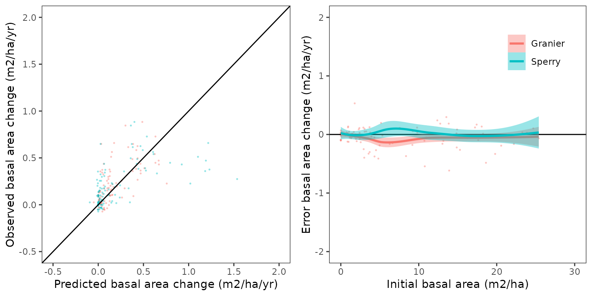
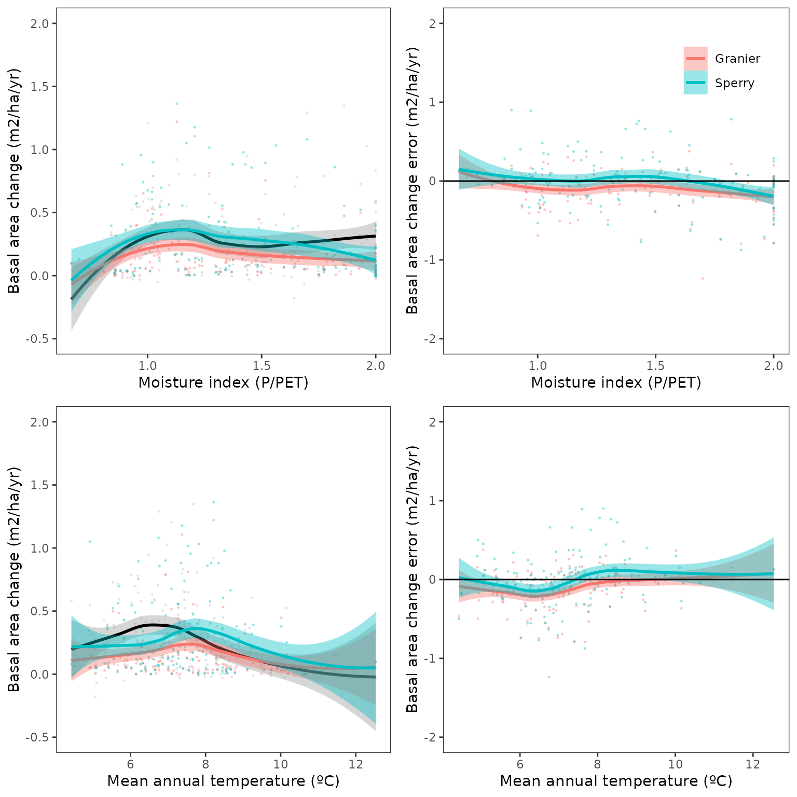
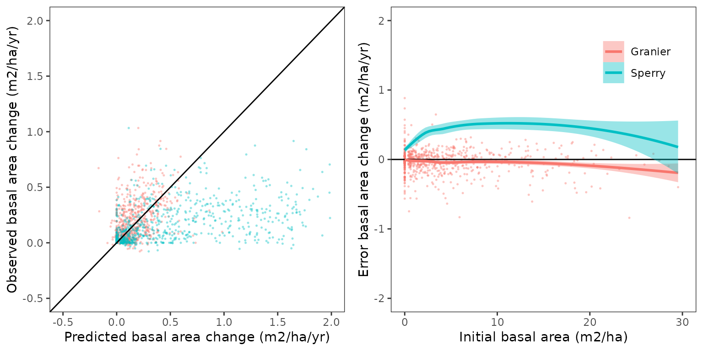
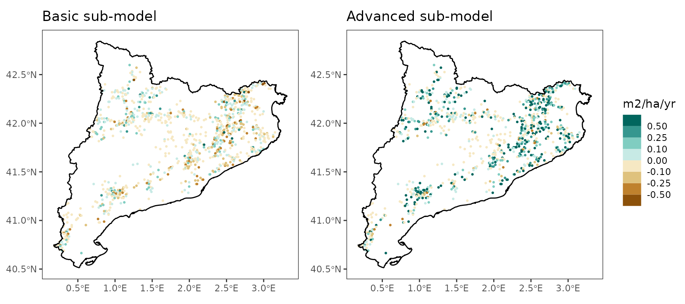
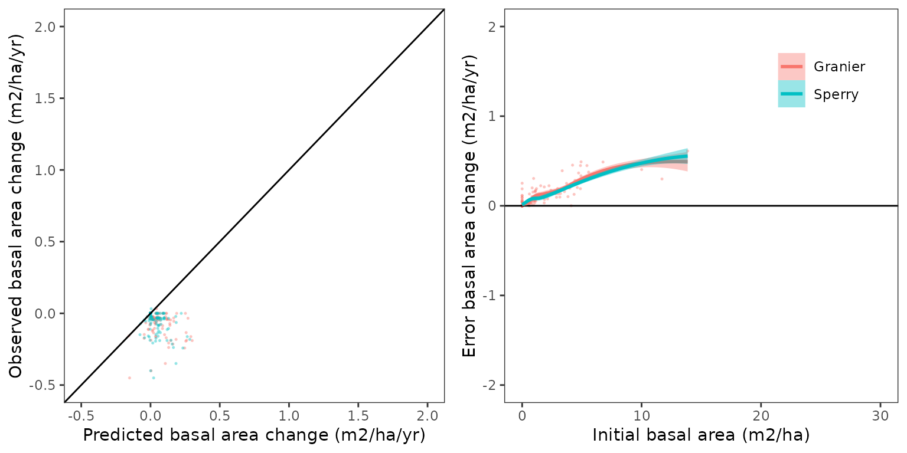
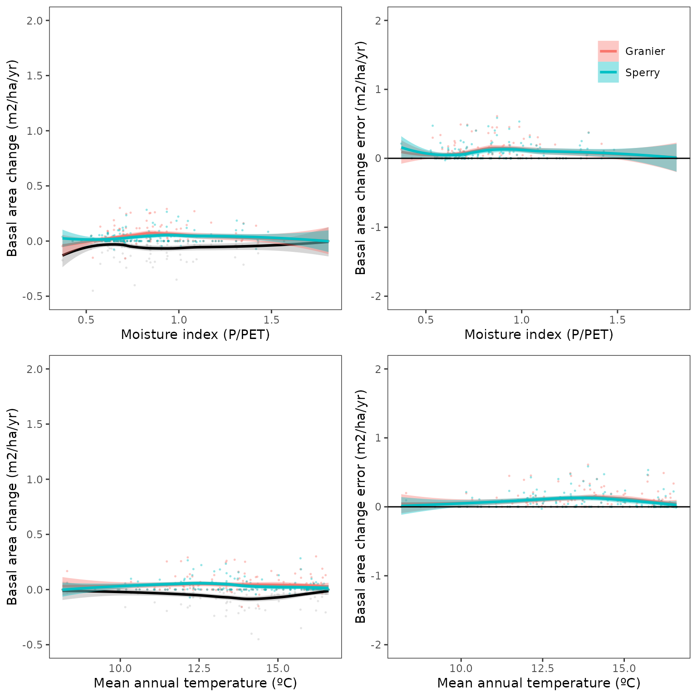

Evaluation of regional-level forest dynamics with forest inventory data
Miquel De Cáceres
2023-02-06
Source:vignettes/evaluation/RegionalLevelEvaluation.Rmd
RegionalLevelEvaluation.RmdIntroduction
Goal
The aim of this article is to provide an assessment of the
performance of fordyn (using either the basic and advanced
sub-model) for the prediction of forest dynamics in Catalonia (NE of
Spain). To this aim, we simulate forest dynamics between surveys of the
Spanish National Forest Inventory and compare the model predictions of
forest growth against inventory data for a set of permanent plots. The
evaluation focuses first on the growth (in diameter and height) of
surviving trees, then turning the attention to the basal area of dead
trees and overall changes in basal area.
Simulation procedure
We selected permanent plots between the second (IFN2) and the fourth (IFN4) without signs of management (i.e. the presence of stumps) and whose basal area did not decrease more than 10% between inventory surveys (to avoid the effect of disturbances).
Soil physical properties were drawn from SoilGrids (Hengl 2016), complemented by rock fragment content estimates derived from surface stoniness measurements in forest plots.
fordyn simulations were conducted for different
periods:
- IFN2 - IFN3 (~ 10 years)
- IFN3 - IFN4 (~ 15 years)
- IFN2 - IFN4 (~ 25 years)
The actual simulated period varied depending on the sampling years of the target plot. Daily weather data were obtained via interpolation on plot’s coordinates using package meteoland.
Default species-specific parameters were modified using the results of the meta-modelling exercise and the growth calibration exercise. These two exercises do not provide values for all the main species included here, so it is expected that evaluation results are worse for those species not included in those exercises.
Simulations were done for both the basic (i.e. Granier) and advanced (i.e. Sperry) transpiration/photosynthesis sub-models. On a server with 20 parallel threads, computational times for the longest simulation period (25 years) are around 4 hours (i.e. 2.5 min/plot) for the basic sub-model, versus around 6 days (i.e. 1.5 hr/plot) for the advanced submodel.
In the following sections, we provide the bias, mean absolute error (in absolute and relative terms), root mean squared error (in absolute and relative terms) and explained variance (R-squared) of growth and mortality predictions at the tree-level and stand-level obtained by simulations with both sub-models. Scatter plots are provided for the IFN2-IFN4 simulation to represent the relationship between predicted and observed values, as well as the factors that may influence the direction and magnitude of prediction error (i.e. initial values, environmental conditions, …).
Detailed results of growth evaluation by species are provided in the last section.
Growth of surviving trees
Comparison of diameter/height growth of trees (DBH >= 7.5) that survived between surveys.
Annual diameter increment
Overall predictive capacity to predict diameter increase (cm/yr):| version | period | transpirationMode | n | Obs | Pred | Bias | Biasrel | MAE | MAErel | RMSQ | RMSQrel | R2 |
|---|---|---|---|---|---|---|---|---|---|---|---|---|
| 2.9.3 | IFN23 | Granier | 25451 | 0.2422718 | 0.2075532 | -0.0347186 | -14.33043 | 0.1312982 | 54.19459 | 0.1825765 | 75.36020 | 0.1129156 |
| 2.9.3 | IFN23 | Sperry | 25451 | 0.2422718 | 0.1803876 | -0.0618842 | -25.54330 | 0.1392589 | 57.48044 | 0.1929294 | 79.63347 | 0.0892353 |
| 2.9.3 | IFN34 | Granier | 34270 | 0.1827690 | 0.2038959 | 0.0211270 | 11.55938 | 0.1132533 | 61.96529 | 0.1515745 | 82.93231 | 0.0881456 |
| 2.9.3 | IFN24 | Granier | 23806 | 0.2108001 | 0.1872523 | -0.0235477 | -11.17065 | 0.1080561 | 51.26001 | 0.1477690 | 70.09911 | 0.0995617 |
| 2.9.3 | IFN24 | Sperry | 18395 | 0.2141055 | 0.1482119 | -0.0658936 | -30.77621 | 0.1230204 | 57.45784 | 0.1679352 | 78.43572 | 0.0584877 |
Predictive capacity plots (IFN2-IFN4):

Relationship between diameter increase and climatic variables (MAT, P/PET and available PAR; IFN2 - IFN4):

Annual height increment
Overall predictive capacity to predict height increase (cm/yr):| version | period | transpirationMode | n | Obs | Pred | Bias | Biasrel | MAE | MAErel | RMSQ | RMSQrel | R2 |
|---|---|---|---|---|---|---|---|---|---|---|---|---|
| 2.9.3 | IFN23 | Granier | 25451 | 11.404600 | 10.048476 | -1.3561245 | -11.891031 | 9.183673 | 80.52604 | 12.793375 | 112.1773 | 0.0595173 |
| 2.9.3 | IFN23 | Sperry | 25451 | 11.404600 | 8.653568 | -2.7510320 | -24.122126 | 9.203929 | 80.70365 | 12.961957 | 113.6555 | 0.0567434 |
| 2.9.3 | IFN34 | Granier | 34270 | 8.415439 | 9.186051 | 0.7706125 | 9.157128 | 8.915184 | 105.93844 | 12.166948 | 144.5789 | 0.0426009 |
| 2.9.3 | IFN24 | Granier | 23806 | 9.617435 | 8.602845 | -1.0145903 | -10.549489 | 7.041452 | 73.21548 | 9.449534 | 98.2542 | 0.0776031 |
| 2.9.3 | IFN24 | Sperry | 18395 | 9.881042 | 6.999742 | -2.8813006 | -29.159885 | 7.481711 | 75.71783 | 10.134775 | 102.5679 | 0.0774688 |
Predictive capacity plots (IFN2-IFN4):

Relationship between height increase and climatic variables (MAT, P/PET and available PAR; IFN2 - IFN4):

Stand-level basal area increment
Comparison of basal area increment of surviving trees does not take into account changes in density. In other words, densities from the first inventory are used to calculate stand-level basal area of surviving trees. Hence, the comparison is meant to evaluate the effect of diameter increment of surviving trees in terms of annual stand basal area increments (m2/ha/yr) for the period evaluated.
Predictive capacity table:| version | period | transpirationMode | n | Obs | Pred | Bias | Biasrel | MAE | MAErel | RMSQ | RMSQrel | R2 |
|---|---|---|---|---|---|---|---|---|---|---|---|---|
| 2.9.3 | IFN23 | Granier | 1849 | 0.3296613 | 0.2777946 | -0.0518667 | -15.73334 | 0.1343535 | 40.75502 | 0.1995647 | 60.53628 | 0.4707870 |
| 2.9.3 | IFN23 | Sperry | 1849 | 0.3296613 | 0.2427931 | -0.0868682 | -26.35074 | 0.1487700 | 45.12815 | 0.2159327 | 65.50137 | 0.4439933 |
| 2.9.3 | IFN34 | Granier | 1848 | 0.3131706 | 0.3496947 | 0.0365242 | 11.66271 | 0.1384174 | 44.19874 | 0.1927712 | 61.55471 | 0.3934933 |
| 2.9.3 | IFN24 | Granier | 1849 | 0.2891554 | 0.2495882 | -0.0395672 | -13.68370 | 0.1187268 | 41.05987 | 0.1736059 | 60.03898 | 0.4633282 |
| 2.9.3 | IFN24 | Sperry | 1414 | 0.2950932 | 0.1996496 | -0.0954436 | -32.34355 | 0.1469080 | 49.78359 | 0.2082185 | 70.56025 | 0.4139876 |
Predictive capacity plots (IFN2 - IFN4):

Relationship between basal area increase and climatic variables (MAT and P/PET; IFN2 - IFN4):

Spatial error distribution (IFN2 - IFN4):

Mortality
Basal area reduction
Annual reduction of basal area (m2/ha/yr) due to trees (DBH >= 7.5) that died during the evaluation period against model’s mortality prediction. In both cases, basal area is calculated using the initial diameter of the trees, so that density reductions are the only prediction that is actually evaluated (and not the possible growth of those trees during the simulation).
Overall predictive capacity:
| version | period | transpirationMode | n | Obs | Pred | Bias | Biasrel | MAE | MAErel | RMSQ | RMSQrel | R2 |
|---|---|---|---|---|---|---|---|---|---|---|---|---|
| 2.9.3 | IFN23 | Granier | 1849 | 0.0322127 | 0.0399399 | 0.0077272 | 23.9881068 | 0.0450620 | 139.88888 | 0.0823345 | 255.5963 | 0.0909956 |
| 2.9.3 | IFN23 | Sperry | 1849 | 0.0322127 | 0.0394999 | 0.0072872 | 22.6220268 | 0.0450923 | 139.98303 | 0.0877745 | 272.4840 | 0.0652509 |
| 2.9.3 | IFN34 | Granier | 1848 | 0.0674740 | 0.0672710 | -0.0002030 | -0.3009268 | 0.0736434 | 109.14334 | 0.1272766 | 188.6306 | 0.0485518 |
| 2.9.3 | IFN24 | Granier | 1849 | 0.0424112 | 0.0458492 | 0.0034380 | 8.1063282 | 0.0440290 | 103.81446 | 0.0782614 | 184.5301 | 0.1162883 |
| 2.9.3 | IFN24 | Sperry | 1414 | 0.0461682 | 0.0382370 | -0.0079312 | -17.1789307 | 0.0395371 | 85.63708 | 0.0684777 | 148.3223 | 0.2539339 |
Predictive capacity plots (IFN2 - IFN4):

Relationship between dead basal area and climatic variables (MAT and P/PET; IFN2 - IFN4):

Spatial distribution of errors (IFN2 - IFN4):

Density reduction
Annual reduction of density (ind/ha/yr) due to trees (DBH >= 7.5) that died during the evaluation period against model’s mortality prediction. This is very similar to evaluating the reduction in basal area
Overall predictive capacity:
| version | period | transpirationMode | n | Obs | Pred | Bias | Biasrel | MAE | MAErel | RMSQ | RMSQrel | R2 |
|---|---|---|---|---|---|---|---|---|---|---|---|---|
| 2.9.3 | IFN23 | Granier | 1849 | 1.924546 | 2.327421 | 0.4028755 | 20.9335330 | 2.986828 | 155.1965 | 6.808074 | 353.7496 | 0.0282111 |
| 2.9.3 | IFN23 | Sperry | 1849 | 1.924546 | 2.095569 | 0.1710230 | 8.8864072 | 2.824597 | 146.7669 | 6.317409 | 328.2545 | 0.0373421 |
| 2.9.3 | IFN34 | Granier | 1848 | 4.119511 | 4.089257 | -0.0302542 | -0.7344125 | 4.977754 | 120.8336 | 9.856150 | 239.2553 | 0.0721594 |
| 2.9.3 | IFN24 | Granier | 1849 | 1.496406 | 2.848049 | 1.3516433 | 90.3259811 | 2.551105 | 170.4821 | 5.379260 | 359.4786 | 0.1010799 |
| 2.9.3 | IFN24 | Sperry | 1414 | 1.535159 | 1.947941 | 0.4127816 | 26.8885180 | 1.822928 | 118.7452 | 3.272688 | 213.1823 | 0.1998159 |
Ingrowth
Basal area increase
Annual increase of basal area (m2/ha/yr) due to ingrowth of trees with diameters between 7.5 cm and 12.5 cm during the evaluated period.
Predictive capacity:
| version | period | transpirationMode | n | Obs | Pred | Bias | Biasrel | MAE | MAErel | RMSQ | RMSQrel | R2 |
|---|---|---|---|---|---|---|---|---|---|---|---|---|
| 2.9.3 | IFN23 | Granier | 1849 | 0.0997102 | 0.1003050 | 0.0005948 | 0.5965202 | 0.1307403 | 131.1203 | 0.2459444 | 246.6593 | 0.0145393 |
| 2.9.3 | IFN23 | Sperry | 1849 | 0.0997102 | 0.2042749 | 0.1045648 | 104.8687261 | 0.2143673 | 214.9904 | 0.4654050 | 466.7579 | 0.0406466 |
| 2.9.3 | IFN34 | Granier | 1848 | 0.0777358 | 0.0935150 | 0.0157792 | 20.2985229 | 0.0961259 | 123.6571 | 0.1418921 | 182.5313 | 0.0218142 |
| 2.9.3 | IFN24 | Granier | 1849 | 0.0870791 | 0.1454456 | 0.0583665 | 67.0269732 | 0.1307702 | 150.1740 | 0.2238800 | 257.0995 | 0.0279531 |
| 2.9.3 | IFN24 | Sperry | 1414 | 0.0869705 | 0.4747272 | 0.3877566 | 445.8483544 | 0.4173054 | 479.8240 | 0.6387852 | 734.4847 | 0.0774772 |
Predictive capacity plots (IFN2 - IFN4):

Relationship between ingrowth basal area and climatic variables (MAT and P/PET; IFN2 - IFN4):

Spatial distribution of errors (IFN2 - IFN4):

Density increase
Annual increase of density (ind/ha/yr) due to ingrowth of trees with diameters between 7.5 cm and 12.5 cm during the evaluated period.
Predictive capacity:
| version | period | transpirationMode | n | Obs | Pred | Bias | Biasrel | MAE | MAErel | RMSQ | RMSQrel | R2 |
|---|---|---|---|---|---|---|---|---|---|---|---|---|
| 2.9.3 | IFN23 | Granier | 1849 | 15.63306 | 18.65126 | 3.018200 | 19.30652 | 22.44932 | 143.6015 | 46.17015 | 295.3365 | 0.0104463 |
| 2.9.3 | IFN23 | Sperry | 1849 | 15.63306 | 39.02254 | 23.389478 | 149.61544 | 39.97199 | 255.6888 | 91.55063 | 585.6218 | 0.0319328 |
| 2.9.3 | IFN34 | Granier | 1848 | 12.35749 | 16.43763 | 4.080138 | 33.01753 | 16.31997 | 132.0654 | 24.17547 | 195.6341 | 0.0172446 |
| 2.9.3 | IFN24 | Granier | 1849 | 12.55855 | 23.46207 | 10.903522 | 86.82150 | 20.76085 | 165.3125 | 36.63030 | 291.6761 | 0.0231824 |
| 2.9.3 | IFN24 | Sperry | 1414 | 12.52674 | 75.98187 | 63.455129 | 506.55748 | 67.18664 | 536.3458 | 102.47084 | 818.0169 | 0.0793305 |
Overall stand-level change
Basal area changes
This includes annual changes in basal area (m2/ha/yr) due to growth of surviving trees, mortality reductions and ingrowth derived from sapling growth. In the observed data, basal area changes include also the incorporation of trees into large diameter classes that results from the variable-radius sampling design. Since it takes into account all processes together, this evaluation is the most rellevant of all.
Overall predictive capacity:
| version | period | transpirationMode | n | Obs | Pred | Bias | Biasrel | MAE | MAErel | RMSQ | RMSQrel | R2 |
|---|---|---|---|---|---|---|---|---|---|---|---|---|
| 2.9.3 | IFN23 | Granier | 1849 | 0.4359136 | 0.3359439 | -0.0999697 | -22.933384 | 0.2609796 | 59.86958 | 0.3733362 | 85.64454 | 0.0964766 |
| 2.9.3 | IFN23 | Sperry | 1849 | 0.4359136 | 0.4072273 | -0.0286863 | -6.580741 | 0.3354688 | 76.95762 | 0.5110964 | 117.24717 | 0.1182679 |
| 2.9.3 | IFN34 | Granier | 1848 | 0.4146818 | 0.3831922 | -0.0314895 | -7.593662 | 0.2193839 | 52.90415 | 0.2904008 | 70.02980 | 0.1137798 |
| 2.9.3 | IFN24 | Granier | 1849 | 0.4235251 | 0.3623213 | -0.0612038 | -14.451034 | 0.2197910 | 51.89563 | 0.2986776 | 70.52181 | 0.1254600 |
| 2.9.3 | IFN24 | Sperry | 1414 | 0.4277247 | 0.6593074 | 0.2315827 | 54.142922 | 0.4388489 | 102.60077 | 0.6040944 | 141.23439 | 0.1215342 |
Predictive capacity plot (IFN2 - IFN4):

Relationship between overall basal area change and climatic variables (MAT and P/PET; IFN2 - IFN4):

Spatial distribution of errors (IFN2 - IFN4):

Density changes
This includes annual changes in density (ind/ha/yr) due to growth of surviving trees, mortality reductions and ingrowth derived from sapling growth. In the observed data, changes include also the incorporation of trees into large diameter classes that results from the variable-radius sampling design.
Overall predictive capacity:
| version | period | transpirationMode | n | Obs | Pred | Bias | Biasrel | MAE | MAErel | RMSQ | RMSQrel | R2 |
|---|---|---|---|---|---|---|---|---|---|---|---|---|
| 2.9.3 | IFN23 | Granier | 1849 | 16.31202 | 16.34429 | 0.0322678 | 0.1978159 | 25.00939 | 153.3188 | 46.79777 | 286.8913 | 0.0168228 |
| 2.9.3 | IFN23 | Sperry | 1849 | 16.31202 | 36.94790 | 20.6358836 | 126.5072319 | 41.51449 | 254.5025 | 90.38386 | 554.0937 | 0.0432285 |
| 2.9.3 | IFN34 | Granier | 1848 | 13.33752 | 12.43359 | -0.9039302 | -6.7773473 | 18.24740 | 136.8125 | 26.02828 | 195.1508 | 0.0263468 |
| 2.9.3 | IFN24 | Granier | 1849 | 14.29142 | 21.41319 | 7.1217748 | 49.8325333 | 21.67224 | 151.6451 | 35.92026 | 251.3415 | 0.0535220 |
| 2.9.3 | IFN24 | Sperry | 1414 | 14.16234 | 75.08796 | 60.9256236 | 430.1946830 | 66.54652 | 469.8837 | 100.78348 | 711.6303 | 0.0819423 |
Detailed evaluation by species
In the following we provide detailed evaluation results for the most important species.
Abies alba
Annual diameter increment
Prediction ability for diameter increase (cm/yr) of surviving trees:| version | period | transpirationMode | n | Obs | Pred | Bias | Biasrel | MAE | MAErel | RMSQ | RMSQrel | R2 |
|---|---|---|---|---|---|---|---|---|---|---|---|---|
| 2.9.3 | IFN23 | Granier | 607 | 0.3293515 | 0.1619377 | -0.1674138 | -50.83134 | 0.2153195 | 65.37682 | 0.3109883 | 94.42446 | 0.1605399 |
| 2.9.3 | IFN23 | Sperry | 607 | 0.3293515 | 0.1504176 | -0.1789339 | -54.32915 | 0.2229129 | 67.68237 | 0.3187926 | 96.79405 | 0.1491530 |
| 2.9.3 | IFN34 | Granier | 786 | 0.3113646 | 0.1660173 | -0.1453473 | -46.68073 | 0.1891548 | 60.75025 | 0.2719481 | 87.34073 | 0.1530006 |
| 2.9.3 | IFN24 | Granier | 580 | 0.3252020 | 0.1551273 | -0.1700747 | -52.29817 | 0.1964262 | 60.40129 | 0.2738035 | 84.19489 | 0.2429738 |
| 2.9.3 | IFN24 | Sperry | 564 | 0.3303654 | 0.1369555 | -0.1934099 | -58.54423 | 0.2137473 | 64.70027 | 0.2911007 | 88.11477 | 0.2341718 |
Annual height increment
Prediction ability for height increase (cm/yr) of surviving trees:
| version | period | transpirationMode | n | Obs | Pred | Bias | Biasrel | MAE | MAErel | RMSQ | RMSQrel | R2 |
|---|---|---|---|---|---|---|---|---|---|---|---|---|
| 2.9.3 | IFN23 | Granier | 607 | 16.73549 | 6.185088 | -10.550405 | -63.04209 | 17.50810 | 104.61657 | 23.99741 | 143.3923 | 0.1403438 |
| 2.9.3 | IFN23 | Sperry | 607 | 16.73549 | 5.708920 | -11.026573 | -65.88735 | 17.85458 | 106.68693 | 24.35275 | 145.5156 | 0.1182097 |
| 2.9.3 | IFN34 | Granier | 786 | 14.45725 | 6.229421 | -8.227829 | -56.91144 | 15.65592 | 108.29112 | 21.26838 | 147.1122 | 0.1206110 |
| 2.9.3 | IFN24 | Granier | 580 | 15.19935 | 5.914730 | -9.284624 | -61.08565 | 14.34036 | 94.34846 | 18.19222 | 119.6908 | 0.2489435 |
| 2.9.3 | IFN24 | Sperry | 564 | 15.69640 | 5.314410 | -10.381988 | -66.14249 | 14.92955 | 95.11453 | 18.77367 | 119.6050 | 0.2337126 |
Growth basal area increment
Prediction ability for basal area increase due to growth (m2/ha/yr) of surviving trees:
| version | period | transpirationMode | n | Obs | Pred | Bias | Biasrel | MAE | MAErel | RMSQ | RMSQrel | R2 |
|---|---|---|---|---|---|---|---|---|---|---|---|---|
| 2.9.3 | IFN23 | Granier | 64 | 0.2303015 | 0.1044080 | -0.1258935 | -54.66466 | 0.1325385 | 57.54999 | 0.2137266 | 92.80296 | 0.6518185 |
| 2.9.3 | IFN23 | Sperry | 64 | 0.2303015 | 0.0962076 | -0.1340939 | -58.22537 | 0.1408767 | 61.17055 | 0.2214297 | 96.14774 | 0.6828032 |
| 2.9.3 | IFN34 | Granier | 57 | 0.3252904 | 0.1614763 | -0.1638141 | -50.35934 | 0.1698116 | 52.20308 | 0.2525746 | 77.64587 | 0.6549668 |
| 2.9.3 | IFN24 | Granier | 64 | 0.2392694 | 0.0990645 | -0.1402049 | -58.59708 | 0.1416977 | 59.22098 | 0.2261957 | 94.53597 | 0.6859514 |
| 2.9.3 | IFN24 | Sperry | 63 | 0.2412928 | 0.0877438 | -0.1535490 | -63.63597 | 0.1545136 | 64.03575 | 0.2394791 | 99.24836 | 0.6818769 |
Mortality
Prediction ability for basal area decrease due to mortality (m2/ha/yr):
| version | period | transpirationMode | n | Obs | Pred | Bias | Biasrel | MAE | MAErel | RMSQ | RMSQrel | R2 |
|---|---|---|---|---|---|---|---|---|---|---|---|---|
| 2.9.3 | IFN23 | Granier | 64 | 0.0400527 | 0.0089602 | -0.0310924 | -77.62893 | 0.0372709 | 93.05486 | 0.0980960 | 244.9177 | 0.6244053 |
| 2.9.3 | IFN23 | Sperry | 64 | 0.0400527 | 0.0057020 | -0.0343506 | -85.76365 | 0.0405291 | 101.18958 | 0.1114359 | 278.2236 | 0.2474656 |
| 2.9.3 | IFN34 | Granier | 57 | 0.0579880 | 0.0409821 | -0.0170059 | -29.32659 | 0.0889916 | 153.46545 | 0.2736371 | 471.8856 | 0.0023534 |
| 2.9.3 | IFN24 | Granier | 64 | 0.0429750 | 0.0240478 | -0.0189272 | -44.04243 | 0.0519240 | 120.82361 | 0.1463323 | 340.5055 | 0.0671063 |
| 2.9.3 | IFN24 | Sperry | 63 | 0.0402153 | 0.0069025 | -0.0333128 | -82.83610 | 0.0402027 | 99.96850 | 0.0947002 | 235.4829 | 0.0621266 |
Prediction ability for density decrease due to mortality (ind/ha/yr):
| version | period | transpirationMode | n | Obs | Pred | Bias | Biasrel | MAE | MAErel | RMSQ | RMSQrel | R2 |
|---|---|---|---|---|---|---|---|---|---|---|---|---|
| 2.9.3 | IFN23 | Granier | 64 | 0.8160092 | 0.2803961 | -0.5356130 | -65.63811 | 0.6417560 | 78.64568 | 2.524516 | 309.3735 | 0.9202634 |
| 2.9.3 | IFN23 | Sperry | 64 | 0.8160092 | 0.0891982 | -0.7268109 | -89.06897 | 0.8329539 | 102.07653 | 3.701790 | 453.6456 | 0.1420027 |
| 2.9.3 | IFN34 | Granier | 57 | 1.0216113 | 0.6718783 | -0.3497331 | -34.23348 | 1.4820796 | 145.07274 | 4.907722 | 480.3903 | 0.0000356 |
| 2.9.3 | IFN24 | Granier | 64 | 0.1621801 | 0.4240788 | 0.2618987 | 161.48638 | 0.4650353 | 286.74008 | 1.825508 | 1125.6053 | 0.0186961 |
| 2.9.3 | IFN24 | Sperry | 63 | 0.1560929 | 0.2231891 | 0.0670962 | 42.98479 | 0.3027433 | 193.95075 | 1.196446 | 766.4962 | 0.0000729 |
Ingrowth
Prediction ability for basal area increase due to ingrowth (m2/ha/yr):
| version | period | transpirationMode | n | Obs | Pred | Bias | Biasrel | MAE | MAErel | RMSQ | RMSQrel | R2 |
|---|---|---|---|---|---|---|---|---|---|---|---|---|
| 2.9.3 | IFN23 | Granier | 64 | 0.0467607 | 0.0169026 | -0.0298581 | -63.85298 | 0.0519159 | 111.0247 | 0.1050560 | 224.6673 | 0.0260252 |
| 2.9.3 | IFN23 | Sperry | 64 | 0.0467607 | 0.0265121 | -0.0202486 | -43.30266 | 0.0587284 | 125.5935 | 0.1254665 | 268.3160 | 0.0075720 |
| 2.9.3 | IFN34 | Granier | 57 | 0.0321417 | 0.0296770 | -0.0024647 | -7.66826 | 0.0485525 | 151.0574 | 0.0812219 | 252.6993 | 0.0020419 |
| 2.9.3 | IFN24 | Granier | 64 | 0.0309012 | 0.0346001 | 0.0036989 | 11.96999 | 0.0473228 | 153.1422 | 0.0825073 | 267.0032 | 0.0472052 |
| 2.9.3 | IFN24 | Sperry | 63 | 0.0310289 | 0.1775606 | 0.1465317 | 472.24221 | 0.1577824 | 508.5010 | 0.3124780 | 1007.0541 | 0.2747644 |
Prediction ability for density increase due to ingrowth (ind/ha/yr):
| version | period | transpirationMode | n | Obs | Pred | Bias | Biasrel | MAE | MAErel | RMSQ | RMSQrel | R2 |
|---|---|---|---|---|---|---|---|---|---|---|---|---|
| 2.9.3 | IFN23 | Granier | 64 | 6.899265 | 3.084967 | -3.8142979 | -55.28557 | 7.892609 | 114.3978 | 16.11794 | 233.6183 | 0.0163200 |
| 2.9.3 | IFN23 | Sperry | 64 | 6.899265 | 5.108292 | -1.7909726 | -25.95889 | 9.526815 | 138.0845 | 21.53839 | 312.1839 | 0.0064974 |
| 2.9.3 | IFN34 | Granier | 57 | 4.681575 | 5.319839 | 0.6382642 | 13.63354 | 7.833646 | 167.3293 | 12.83895 | 274.2441 | 0.0088305 |
| 2.9.3 | IFN24 | Granier | 64 | 4.013310 | 5.537941 | 1.5246303 | 37.98935 | 6.822836 | 170.0052 | 12.24951 | 305.2222 | 0.0567917 |
| 2.9.3 | IFN24 | Sperry | 63 | 4.004834 | 30.687902 | 26.6830680 | 666.27144 | 28.250056 | 705.3989 | 57.27712 | 1430.1994 | 0.2319264 |
Overall basal area changes
Prediction ability for overall basal area changes (including growth, mortality and ingrowth):
| version | period | transpirationMode | n | Obs | Pred | Bias | Biasrel | MAE | MAErel | RMSQ | RMSQrel | R2 |
|---|---|---|---|---|---|---|---|---|---|---|---|---|
| 2.9.3 | IFN23 | Granier | 64 | 0.2566565 | 0.1160320 | -0.1406245 | -54.79092 | 0.1647348 | 64.18495 | 0.2767464 | 107.8276 | 0.4613822 |
| 2.9.3 | IFN23 | Sperry | 64 | 0.2566565 | 0.1205065 | -0.1361500 | -53.04755 | 0.1738064 | 67.71946 | 0.2873038 | 111.9410 | 0.3227678 |
| 2.9.3 | IFN34 | Granier | 57 | 0.3779948 | 0.1554165 | -0.2225783 | -58.88395 | 0.2858956 | 75.63479 | 0.4669553 | 123.5348 | 0.0431872 |
| 2.9.3 | IFN24 | Granier | 64 | 0.2971699 | 0.1189479 | -0.1782220 | -59.97311 | 0.2015994 | 67.83978 | 0.3333682 | 112.1810 | 0.1994543 |
| 2.9.3 | IFN24 | Sperry | 63 | 0.3001931 | 0.2666897 | -0.0335034 | -11.16062 | 0.1902083 | 63.36198 | 0.3054614 | 101.7550 | 0.3223420 |
Predictive capacity plots (IFN2-IFN4):

Relationship between basal area changes and climatic
variables (MAT and P/PET; IFN2-IFN4):

Spatial distribution of errors (IFN2-IFN4):

Prediction ability for overall density changes (including growth, mortality and ingrowth):
| version | period | transpirationMode | n | Obs | Pred | Bias | Biasrel | MAE | MAErel | RMSQ | RMSQrel | R2 |
|---|---|---|---|---|---|---|---|---|---|---|---|---|
| 2.9.3 | IFN23 | Granier | 64 | 7.974417 | 2.804571 | -5.169847 | -64.83040 | 8.709409 | 109.2169 | 16.92433 | 212.2328 | 0.0528108 |
| 2.9.3 | IFN23 | Sperry | 64 | 7.974417 | 5.019094 | -2.955323 | -37.06005 | 10.965688 | 137.5108 | 22.51057 | 282.2848 | 0.0051991 |
| 2.9.3 | IFN34 | Granier | 57 | 5.797156 | 4.647961 | -1.149195 | -19.82343 | 10.231990 | 176.5001 | 13.87428 | 239.3291 | 0.0005048 |
| 2.9.3 | IFN24 | Granier | 64 | 6.437633 | 5.334726 | -1.102907 | -17.13218 | 8.435293 | 131.0310 | 13.43666 | 208.7204 | 0.0862687 |
| 2.9.3 | IFN24 | Sperry | 63 | 6.432431 | 30.615926 | 24.183495 | 375.96198 | 27.855815 | 433.0527 | 54.87509 | 853.1004 | 0.2848151 |
Fagus sylvatica
Annual diameter increment
Prediction ability for diameter increase (cm/yr) of surviving trees:| version | period | transpirationMode | n | Obs | Pred | Bias | Biasrel | MAE | MAErel | RMSQ | RMSQrel | R2 |
|---|---|---|---|---|---|---|---|---|---|---|---|---|
| 2.9.3 | IFN23 | Granier | 878 | 0.2623334 | 0.1802372 | -0.0820962 | -31.29459 | 0.1465416 | 55.86082 | 0.2210746 | 84.27239 | 0.1010809 |
| 2.9.3 | IFN23 | Sperry | 878 | 0.2623334 | 0.1545594 | -0.1077740 | -41.08283 | 0.1635129 | 62.33019 | 0.2391192 | 91.15087 | 0.0481324 |
| 2.9.3 | IFN34 | Granier | 1148 | 0.2237397 | 0.1878770 | -0.0358626 | -16.02873 | 0.1211919 | 54.16650 | 0.1718883 | 76.82512 | 0.0932872 |
| 2.9.3 | IFN24 | Granier | 843 | 0.2498612 | 0.1784809 | -0.0713803 | -28.56797 | 0.1313487 | 52.56868 | 0.1895278 | 75.85322 | 0.0791156 |
| 2.9.3 | IFN24 | Sperry | 716 | 0.2477486 | 0.1363479 | -0.1114007 | -44.96521 | 0.1578613 | 63.71832 | 0.2209924 | 89.20024 | 0.0307468 |
Annual height increment
Prediction ability for height increase (cm/yr) of surviving trees:
| version | period | transpirationMode | n | Obs | Pred | Bias | Biasrel | MAE | MAErel | RMSQ | RMSQrel | R2 |
|---|---|---|---|---|---|---|---|---|---|---|---|---|
| 2.9.3 | IFN23 | Granier | 878 | 16.94559 | 8.403652 | -8.541938 | -50.40803 | 13.55372 | 79.98377 | 18.37369 | 108.42758 | 0.0470592 |
| 2.9.3 | IFN23 | Sperry | 878 | 16.94559 | 7.291140 | -9.654451 | -56.97323 | 13.83067 | 81.61810 | 18.93378 | 111.73278 | 0.0475100 |
| 2.9.3 | IFN34 | Granier | 1148 | 13.05423 | 8.182186 | -4.872040 | -37.32155 | 12.73799 | 97.57754 | 17.79406 | 136.30879 | 0.0071940 |
| 2.9.3 | IFN24 | Granier | 843 | 14.96091 | 8.054580 | -6.906334 | -46.16251 | 11.56953 | 77.33172 | 14.66768 | 98.04002 | 0.0393243 |
| 2.9.3 | IFN24 | Sperry | 716 | 14.79183 | 6.368628 | -8.423206 | -56.94497 | 12.24107 | 82.75560 | 15.61380 | 105.55692 | 0.0421692 |
Growth basal area increment
Prediction ability for basal area increase due to growth (m2/ha/yr) of surviving trees:
| version | period | transpirationMode | n | Obs | Pred | Bias | Biasrel | MAE | MAErel | RMSQ | RMSQrel | R2 |
|---|---|---|---|---|---|---|---|---|---|---|---|---|
| 2.9.3 | IFN23 | Granier | 111 | 0.1794384 | 0.1273927 | -0.0520457 | -29.00478 | 0.0770984 | 42.96648 | 0.1306456 | 72.80807 | 0.6872673 |
| 2.9.3 | IFN23 | Sperry | 111 | 0.1794384 | 0.1131589 | -0.0662795 | -36.93718 | 0.0909708 | 50.69749 | 0.1442924 | 80.41333 | 0.6418191 |
| 2.9.3 | IFN34 | Granier | 111 | 0.1871974 | 0.1585020 | -0.0286954 | -15.32894 | 0.0744635 | 39.77805 | 0.1131109 | 60.42332 | 0.6907435 |
| 2.9.3 | IFN24 | Granier | 111 | 0.1775444 | 0.1280506 | -0.0494937 | -27.87682 | 0.0762913 | 42.97028 | 0.1261572 | 71.05673 | 0.6739264 |
| 2.9.3 | IFN24 | Sperry | 93 | 0.1781346 | 0.1048978 | -0.0732367 | -41.11314 | 0.0975600 | 54.76759 | 0.1529648 | 85.87038 | 0.5873381 |
Mortality
Prediction ability for basal area decrease due to mortality (m2/ha/yr):
| version | period | transpirationMode | n | Obs | Pred | Bias | Biasrel | MAE | MAErel | RMSQ | RMSQrel | R2 |
|---|---|---|---|---|---|---|---|---|---|---|---|---|
| 2.9.3 | IFN23 | Granier | 111 | 0.0093366 | 0.0136086 | 0.0042720 | 45.754932 | 0.0189721 | 203.2005 | 0.0414851 | 444.3259 | 0.0029523 |
| 2.9.3 | IFN23 | Sperry | 111 | 0.0093366 | 0.0115466 | 0.0022100 | 23.670087 | 0.0169101 | 181.1157 | 0.0363380 | 389.1973 | 0.0187435 |
| 2.9.3 | IFN34 | Granier | 111 | 0.0197864 | 0.0215575 | 0.0017711 | 8.951065 | 0.0262417 | 132.6249 | 0.0545023 | 275.4535 | 0.2294120 |
| 2.9.3 | IFN24 | Granier | 111 | 0.0138583 | 0.0147685 | 0.0009101 | 6.567415 | 0.0161009 | 116.1820 | 0.0281496 | 203.1240 | 0.3252391 |
| 2.9.3 | IFN24 | Sperry | 93 | 0.0138630 | 0.0126621 | -0.0012009 | -8.662435 | 0.0176137 | 127.0555 | 0.0334734 | 241.4582 | 0.1060368 |
Prediction ability for density decrease due to mortality (ind/ha/yr):
| version | period | transpirationMode | n | Obs | Pred | Bias | Biasrel | MAE | MAErel | RMSQ | RMSQrel | R2 |
|---|---|---|---|---|---|---|---|---|---|---|---|---|
| 2.9.3 | IFN23 | Granier | 111 | 0.3958592 | 0.6578628 | 0.2620037 | 66.186083 | 0.9014672 | 227.7242 | 2.655113 | 670.7216 | 0.0087327 |
| 2.9.3 | IFN23 | Sperry | 111 | 0.3958592 | 0.4635202 | 0.0676611 | 17.092204 | 0.7071245 | 178.6303 | 1.586535 | 400.7826 | 0.1217121 |
| 2.9.3 | IFN34 | Granier | 111 | 1.2767237 | 1.3172913 | 0.0405676 | 3.177478 | 1.6814872 | 131.7033 | 5.451094 | 426.9596 | 0.3655188 |
| 2.9.3 | IFN24 | Granier | 111 | 0.5385259 | 0.8740911 | 0.3355652 | 62.311813 | 0.7797184 | 144.7875 | 2.036288 | 378.1226 | 0.5549949 |
| 2.9.3 | IFN24 | Sperry | 93 | 0.4925549 | 0.5056906 | 0.0131358 | 2.666862 | 0.6514556 | 132.2605 | 1.498004 | 304.1294 | 0.3217710 |
Ingrowth
Prediction ability for basal area increase due to ingrowth (m2/ha/yr):
| version | period | transpirationMode | n | Obs | Pred | Bias | Biasrel | MAE | MAErel | RMSQ | RMSQrel | R2 |
|---|---|---|---|---|---|---|---|---|---|---|---|---|
| 2.9.3 | IFN23 | Granier | 111 | 0.0299520 | 0.0118897 | -0.0180623 | -60.3041208 | 0.0357662 | 119.4115 | 0.0823131 | 274.8166 | 0.0025570 |
| 2.9.3 | IFN23 | Sperry | 111 | 0.0299520 | 0.0238316 | -0.0061204 | -20.4339977 | 0.0496148 | 165.6477 | 0.1341902 | 448.0173 | 0.0083929 |
| 2.9.3 | IFN34 | Granier | 111 | 0.0234257 | 0.0231975 | -0.0002282 | -0.9743009 | 0.0314616 | 134.3038 | 0.0607123 | 259.1695 | 0.0255272 |
| 2.9.3 | IFN24 | Granier | 111 | 0.0268034 | 0.0364574 | 0.0096540 | 36.0179449 | 0.0496601 | 185.2757 | 0.1065802 | 397.6372 | 0.0102016 |
| 2.9.3 | IFN24 | Sperry | 93 | 0.0261665 | 0.1186763 | 0.0925098 | 353.5425049 | 0.1148055 | 438.7494 | 0.2673738 | 1021.8160 | 0.1007180 |
Prediction ability for density increase due to ingrowth (ind/ha/yr):
| version | period | transpirationMode | n | Obs | Pred | Bias | Biasrel | MAE | MAErel | RMSQ | RMSQrel | R2 |
|---|---|---|---|---|---|---|---|---|---|---|---|---|
| 2.9.3 | IFN23 | Granier | 111 | 4.826219 | 2.296551 | -2.5296680 | -52.415107 | 6.028465 | 124.9107 | 12.69251 | 262.9906 | 0.0015711 |
| 2.9.3 | IFN23 | Sperry | 111 | 4.826219 | 4.494738 | -0.3314817 | -6.868351 | 8.604252 | 178.2814 | 24.17446 | 500.8985 | 0.0066067 |
| 2.9.3 | IFN34 | Granier | 111 | 3.910696 | 4.412547 | 0.5018509 | 12.832775 | 5.756747 | 147.2052 | 11.04123 | 282.3341 | 0.0188019 |
| 2.9.3 | IFN24 | Granier | 111 | 3.989953 | 6.170584 | 2.1806308 | 54.653051 | 8.090838 | 202.7803 | 18.93471 | 474.5599 | 0.0035437 |
| 2.9.3 | IFN24 | Sperry | 93 | 3.865784 | 20.864554 | 16.9987707 | 439.723813 | 20.432397 | 528.5448 | 49.23803 | 1273.6882 | 0.0963724 |
Overall basal area changes
Prediction ability for overall basal area changes (including growth, mortality and ingrowth):
| version | period | transpirationMode | n | Obs | Pred | Bias | Biasrel | MAE | MAErel | RMSQ | RMSQrel | R2 |
|---|---|---|---|---|---|---|---|---|---|---|---|---|
| 2.9.3 | IFN23 | Granier | 111 | 0.2133114 | 0.1243333 | -0.0889782 | -41.71279 | 0.1341743 | 62.90065 | 0.2150088 | 100.79574 | 0.3753955 |
| 2.9.3 | IFN23 | Sperry | 111 | 0.2133114 | 0.1241318 | -0.0891796 | -41.80723 | 0.1468249 | 68.83124 | 0.2270193 | 106.42623 | 0.3424875 |
| 2.9.3 | IFN34 | Granier | 111 | 0.1978518 | 0.1612003 | -0.0366515 | -18.52471 | 0.1117736 | 56.49360 | 0.1733507 | 87.61644 | 0.4297551 |
| 2.9.3 | IFN24 | Granier | 111 | 0.2076650 | 0.1501523 | -0.0575127 | -27.69493 | 0.1172106 | 56.44213 | 0.1783657 | 85.89107 | 0.4563555 |
| 2.9.3 | IFN24 | Sperry | 93 | 0.2059182 | 0.2102772 | 0.0043590 | 2.11687 | 0.1710714 | 83.07738 | 0.2692068 | 130.73486 | 0.3214947 |
Predictive capacity plots (IFN2-IFN4):

Relationship between basal area changes and climatic
variables (MAT and P/PET; IFN2-IFN4):

Spatial distribution of errors (IFN2-IFN4):

Prediction ability for overall density changes (including growth, mortality and ingrowth):
| version | period | transpirationMode | n | Obs | Pred | Bias | Biasrel | MAE | MAErel | RMSQ | RMSQrel | R2 |
|---|---|---|---|---|---|---|---|---|---|---|---|---|
| 2.9.3 | IFN23 | Granier | 111 | 5.152229 | 1.638688 | -3.5135406 | -68.19457 | 7.846513 | 152.2936 | 14.29260 | 277.4062 | 0.0087704 |
| 2.9.3 | IFN23 | Sperry | 111 | 5.152229 | 4.031217 | -1.1210116 | -21.75780 | 10.014044 | 194.3633 | 23.37360 | 453.6599 | 0.0318314 |
| 2.9.3 | IFN34 | Granier | 111 | 3.502786 | 3.095256 | -0.4075296 | -11.63444 | 7.294044 | 208.2355 | 13.24633 | 378.1657 | 0.0104583 |
| 2.9.3 | IFN24 | Granier | 111 | 4.276148 | 5.333739 | 1.0575904 | 24.73231 | 8.452444 | 197.6649 | 18.28115 | 427.5143 | 0.0342310 |
| 2.9.3 | IFN24 | Sperry | 93 | 3.944717 | 20.358864 | 16.4141471 | 416.10461 | 20.317256 | 515.0498 | 48.14621 | 1220.5240 | 0.1707070 |
Pinus halepensis
Annual diameter increment
Prediction ability for diameter increase (cm/yr) of surviving trees:| version | period | transpirationMode | n | Obs | Pred | Bias | Biasrel | MAE | MAErel | RMSQ | RMSQrel | R2 |
|---|---|---|---|---|---|---|---|---|---|---|---|---|
| 2.9.3 | IFN23 | Granier | 3315 | 0.3453912 | 0.3295523 | -0.0158389 | -4.585772 | 0.1743584 | 50.48143 | 0.2242510 | 64.92667 | 0.0335692 |
| 2.9.3 | IFN23 | Sperry | 3315 | 0.3453912 | 0.2184100 | -0.1269812 | -36.764465 | 0.1880045 | 54.43234 | 0.2447856 | 70.87200 | 0.1211727 |
| 2.9.3 | IFN34 | Granier | 4614 | 0.2454536 | 0.2891247 | 0.0436711 | 17.792015 | 0.1364487 | 55.59041 | 0.1720032 | 70.07563 | 0.0321718 |
| 2.9.3 | IFN24 | Granier | 3028 | 0.2907091 | 0.2783457 | -0.0123634 | -4.252842 | 0.1394442 | 47.96693 | 0.1771452 | 60.93556 | 0.0304371 |
| 2.9.3 | IFN24 | Sperry | 2248 | 0.2937547 | 0.1514808 | -0.1422739 | -48.432900 | 0.1713500 | 58.33099 | 0.2178401 | 74.15714 | 0.1203767 |
Annual height increment
Prediction ability for height increase (cm/yr) of surviving trees:
| version | period | transpirationMode | n | Obs | Pred | Bias | Biasrel | MAE | MAErel | RMSQ | RMSQrel | R2 |
|---|---|---|---|---|---|---|---|---|---|---|---|---|
| 2.9.3 | IFN23 | Granier | 3315 | 13.88513 | 15.565493 | 1.6803625 | 12.101885 | 10.997241 | 79.20157 | 14.28870 | 102.90648 | 0.0093477 |
| 2.9.3 | IFN23 | Sperry | 3315 | 13.88513 | 10.060122 | -3.8250081 | -27.547513 | 10.346669 | 74.51618 | 14.05065 | 101.19209 | 0.0354943 |
| 2.9.3 | IFN34 | Granier | 4614 | 10.20661 | 12.220192 | 2.0135814 | 19.728208 | 9.246400 | 90.59226 | 11.78847 | 115.49841 | 0.0032116 |
| 2.9.3 | IFN24 | Granier | 3028 | 11.63928 | 12.060017 | 0.4207331 | 3.614768 | 7.821402 | 67.19831 | 10.00987 | 86.00071 | 0.0049275 |
| 2.9.3 | IFN24 | Sperry | 2248 | 11.53114 | 6.576175 | -4.9549642 | -42.970292 | 7.852530 | 68.09848 | 10.43034 | 90.45370 | 0.0758956 |
Growth basal area increment
Prediction ability for basal area increase due to growth (m2/ha/yr) of surviving trees:
| version | period | transpirationMode | n | Obs | Pred | Bias | Biasrel | MAE | MAErel | RMSQ | RMSQrel | R2 |
|---|---|---|---|---|---|---|---|---|---|---|---|---|
| 2.9.3 | IFN23 | Granier | 514 | 0.2222136 | 0.2105599 | -0.0116537 | -5.244377 | 0.0950917 | 42.79291 | 0.1480564 | 66.62794 | 0.6445964 |
| 2.9.3 | IFN23 | Sperry | 514 | 0.2222136 | 0.1336052 | -0.0886084 | -39.875316 | 0.1103330 | 49.65178 | 0.1772059 | 79.74575 | 0.6089354 |
| 2.9.3 | IFN34 | Granier | 524 | 0.1990772 | 0.2375701 | 0.0384930 | 19.335692 | 0.0921830 | 46.30514 | 0.1404820 | 70.56662 | 0.6111115 |
| 2.9.3 | IFN24 | Granier | 514 | 0.1893333 | 0.1766812 | -0.0126521 | -6.682445 | 0.0824784 | 43.56254 | 0.1310695 | 69.22688 | 0.6172066 |
| 2.9.3 | IFN24 | Sperry | 386 | 0.1895882 | 0.0884360 | -0.1011523 | -53.353666 | 0.1092900 | 57.64598 | 0.1724885 | 90.98061 | 0.5478379 |
Mortality
Prediction ability for basal area decrease due to mortality (m2/ha/yr):
| version | period | transpirationMode | n | Obs | Pred | Bias | Biasrel | MAE | MAErel | RMSQ | RMSQrel | R2 |
|---|---|---|---|---|---|---|---|---|---|---|---|---|
| 2.9.3 | IFN23 | Granier | 514 | 0.0156874 | 0.0322543 | 0.0165669 | 105.606220 | 0.0349853 | 223.01509 | 0.0679089 | 432.8884 | 0.0763693 |
| 2.9.3 | IFN23 | Sperry | 514 | 0.0156874 | 0.0265286 | 0.0108412 | 69.107950 | 0.0299164 | 190.70326 | 0.0537432 | 342.5882 | 0.1797002 |
| 2.9.3 | IFN34 | Granier | 524 | 0.0428528 | 0.0437688 | 0.0009160 | 2.137464 | 0.0453474 | 105.82127 | 0.0723465 | 168.8255 | 0.1506803 |
| 2.9.3 | IFN24 | Granier | 514 | 0.0244592 | 0.0318383 | 0.0073791 | 30.168808 | 0.0294633 | 120.45895 | 0.0522103 | 213.4587 | 0.1544315 |
| 2.9.3 | IFN24 | Sperry | 386 | 0.0253096 | 0.0249468 | -0.0003628 | -1.433260 | 0.0250869 | 99.12019 | 0.0445720 | 176.1073 | 0.3182743 |
Prediction ability for density decrease due to mortality (ind/ha/yr):
| version | period | transpirationMode | n | Obs | Pred | Bias | Biasrel | MAE | MAErel | RMSQ | RMSQrel | R2 |
|---|---|---|---|---|---|---|---|---|---|---|---|---|
| 2.9.3 | IFN23 | Granier | 514 | 0.8437619 | 1.868542 | 1.0247795 | 121.45364 | 2.102227 | 249.1493 | 5.697515 | 675.2515 | 0.0580209 |
| 2.9.3 | IFN23 | Sperry | 514 | 0.8437619 | 1.258769 | 0.4150066 | 49.18528 | 1.605369 | 190.2633 | 3.808321 | 451.3501 | 0.1587615 |
| 2.9.3 | IFN34 | Granier | 524 | 2.4142202 | 2.049150 | -0.3650705 | -15.12167 | 2.675282 | 110.8135 | 5.272336 | 218.3867 | 0.1407899 |
| 2.9.3 | IFN24 | Granier | 514 | 0.8686008 | 1.780777 | 0.9121761 | 105.01672 | 1.497406 | 172.3929 | 3.395781 | 390.9485 | 0.1845514 |
| 2.9.3 | IFN24 | Sperry | 386 | 0.8629935 | 1.208968 | 0.3459745 | 40.09005 | 1.021689 | 118.3890 | 1.707428 | 197.8494 | 0.3592773 |
Ingrowth
Prediction ability for basal area increase due to ingrowth (m2/ha/yr):
| version | period | transpirationMode | n | Obs | Pred | Bias | Biasrel | MAE | MAErel | RMSQ | RMSQrel | R2 |
|---|---|---|---|---|---|---|---|---|---|---|---|---|
| 2.9.3 | IFN23 | Granier | 514 | 0.0443056 | 0.0964913 | 0.0521858 | 117.7860 | 0.1020488 | 230.3294 | 0.2481005 | 559.9759 | 0.0636906 |
| 2.9.3 | IFN23 | Sperry | 514 | 0.0443056 | 0.1425482 | 0.0982426 | 221.7388 | 0.1507871 | 340.3344 | 0.3842664 | 867.3095 | 0.0418554 |
| 2.9.3 | IFN34 | Granier | 524 | 0.0277735 | 0.0587952 | 0.0310216 | 111.6950 | 0.0539682 | 194.3153 | 0.0891563 | 321.0115 | 0.2355636 |
| 2.9.3 | IFN24 | Granier | 514 | 0.0301463 | 0.0793049 | 0.0491586 | 163.0670 | 0.0778415 | 258.2126 | 0.1726119 | 572.5807 | 0.0805187 |
| 2.9.3 | IFN24 | Sperry | 386 | 0.0334394 | 0.2081213 | 0.1746819 | 522.3827 | 0.2024426 | 605.4007 | 0.3988287 | 1192.6893 | 0.0225182 |
Prediction ability for density increase due to ingrowth (ind/ha/yr):
| version | period | transpirationMode | n | Obs | Pred | Bias | Biasrel | MAE | MAErel | RMSQ | RMSQrel | R2 |
|---|---|---|---|---|---|---|---|---|---|---|---|---|
| 2.9.3 | IFN23 | Granier | 514 | 6.582412 | 16.230221 | 9.647810 | 146.5695 | 16.862647 | 256.1773 | 45.43459 | 690.2423 | 0.0544547 |
| 2.9.3 | IFN23 | Sperry | 514 | 6.582412 | 25.813252 | 19.230841 | 292.1549 | 26.850548 | 407.9135 | 75.15842 | 1141.8068 | 0.0348752 |
| 2.9.3 | IFN34 | Granier | 524 | 4.021864 | 8.815663 | 4.793799 | 119.1935 | 8.175149 | 203.2677 | 13.73345 | 341.4699 | 0.2194950 |
| 2.9.3 | IFN24 | Granier | 514 | 4.065730 | 10.644048 | 6.578318 | 161.7992 | 10.492032 | 258.0602 | 23.70490 | 583.0417 | 0.0658754 |
| 2.9.3 | IFN24 | Sperry | 386 | 4.518917 | 31.858675 | 27.339758 | 605.0069 | 30.981236 | 685.5899 | 63.37852 | 1402.5158 | 0.0201697 |
Overall basal area changes
Prediction ability for overall basal area changes (including growth, mortality and ingrowth):
| version | period | transpirationMode | n | Obs | Pred | Bias | Biasrel | MAE | MAErel | RMSQ | RMSQrel | R2 |
|---|---|---|---|---|---|---|---|---|---|---|---|---|
| 2.9.3 | IFN23 | Granier | 514 | 0.2527672 | 0.2675581 | 0.0147909 | 5.851591 | 0.2066823 | 81.76785 | 0.3224195 | 127.55593 | 0.1782605 |
| 2.9.3 | IFN23 | Sperry | 514 | 0.2527672 | 0.2468301 | -0.0059371 | -2.348845 | 0.2638928 | 104.40155 | 0.4210731 | 166.58538 | 0.1170953 |
| 2.9.3 | IFN34 | Granier | 524 | 0.2323234 | 0.2563235 | 0.0240001 | 10.330474 | 0.1505176 | 64.78796 | 0.2364736 | 101.78642 | 0.1784734 |
| 2.9.3 | IFN24 | Granier | 514 | 0.2473398 | 0.2427937 | -0.0045461 | -1.837986 | 0.1742583 | 70.45299 | 0.2461524 | 99.51992 | 0.1594523 |
| 2.9.3 | IFN24 | Sperry | 386 | 0.2513310 | 0.2838311 | 0.0325001 | 12.931181 | 0.2736819 | 108.89302 | 0.3827889 | 152.30468 | 0.1353756 |
Predictive capacity plots (IFN2-IFN4):

Relationship between basal area changes and climatic
variables (MAT and P/PET; IFN2-IFN4):

Spatial distribution of errors (IFN2-IFN4):

Prediction ability for overall density changes (including growth, mortality and ingrowth):
| version | period | transpirationMode | n | Obs | Pred | Bias | Biasrel | MAE | MAErel | RMSQ | RMSQrel | R2 |
|---|---|---|---|---|---|---|---|---|---|---|---|---|
| 2.9.3 | IFN23 | Granier | 514 | 6.907981 | 14.416004 | 7.508023 | 108.68621 | 19.365428 | 280.3341 | 45.82141 | 663.3111 | 0.0517208 |
| 2.9.3 | IFN23 | Sperry | 514 | 6.907981 | 24.575320 | 17.667339 | 255.75257 | 28.811675 | 417.0781 | 74.85547 | 1083.6085 | 0.0316036 |
| 2.9.3 | IFN34 | Granier | 524 | 4.338493 | 6.948008 | 2.609515 | 60.14794 | 9.569696 | 220.5765 | 15.14223 | 349.0204 | 0.1894318 |
| 2.9.3 | IFN24 | Granier | 514 | 5.397901 | 10.444362 | 5.046461 | 93.48931 | 12.469558 | 231.0075 | 24.25484 | 449.3383 | 0.0834796 |
| 2.9.3 | IFN24 | Sperry | 386 | 5.836581 | 31.319090 | 25.482510 | 436.59998 | 31.877735 | 546.1714 | 62.70519 | 1074.3480 | 0.0114738 |
Pinus nigra
Annual diameter increment
Prediction ability for diameter increase (cm/yr) of surviving trees:| version | period | transpirationMode | n | Obs | Pred | Bias | Biasrel | MAE | MAErel | RMSQ | RMSQrel | R2 |
|---|---|---|---|---|---|---|---|---|---|---|---|---|
| 2.9.3 | IFN23 | Granier | 2468 | 0.2572107 | 0.2358339 | -0.0213768 | -8.311022 | 0.1291806 | 50.22366 | 0.1673097 | 65.04771 | 0.0115570 |
| 2.9.3 | IFN23 | Sperry | 2468 | 0.2572107 | 0.1913294 | -0.0658813 | -25.613742 | 0.1397579 | 54.33597 | 0.1819450 | 70.73771 | 0.0316028 |
| 2.9.3 | IFN34 | Granier | 3379 | 0.1748295 | 0.2438511 | 0.0690216 | 39.479371 | 0.1245778 | 71.25674 | 0.1529476 | 87.48386 | 0.0012379 |
| 2.9.3 | IFN24 | Granier | 2393 | 0.2128712 | 0.2117553 | -0.0011159 | -0.524207 | 0.1123906 | 52.79748 | 0.1443479 | 67.81001 | 0.0012752 |
| 2.9.3 | IFN24 | Sperry | 1907 | 0.2048221 | 0.1439610 | -0.0608611 | -29.714137 | 0.1163255 | 56.79345 | 0.1494209 | 72.95157 | 0.0244278 |
Annual height increment
Prediction ability for height increase (cm/yr) of surviving trees:
| version | period | transpirationMode | n | Obs | Pred | Bias | Biasrel | MAE | MAErel | RMSQ | RMSQrel | R2 |
|---|---|---|---|---|---|---|---|---|---|---|---|---|
| 2.9.3 | IFN23 | Granier | 2468 | 13.03333 | 14.749214 | 1.7158890 | 13.165397 | 9.882641 | 75.82594 | 12.932845 | 99.22905 | 0.0181582 |
| 2.9.3 | IFN23 | Sperry | 2468 | 13.03333 | 12.034468 | -0.9988577 | -7.663874 | 9.397230 | 72.10155 | 12.594392 | 96.63223 | 0.0530072 |
| 2.9.3 | IFN34 | Granier | 3379 | 10.18954 | 13.944668 | 3.7551257 | 36.852742 | 9.638985 | 94.59684 | 12.022232 | 117.98599 | 0.0013637 |
| 2.9.3 | IFN24 | Granier | 2393 | 11.16151 | 12.558771 | 1.3972639 | 12.518596 | 7.730843 | 69.26343 | 9.711681 | 87.01048 | 0.0072790 |
| 2.9.3 | IFN24 | Sperry | 1907 | 11.06997 | 9.058226 | -2.0117473 | -18.173009 | 7.183195 | 64.88900 | 9.289824 | 83.91912 | 0.0720031 |
Growth basal area increment
Prediction ability for basal area increase due to growth (m2/ha/yr) of surviving trees:
| version | period | transpirationMode | n | Obs | Pred | Bias | Biasrel | MAE | MAErel | RMSQ | RMSQrel | R2 |
|---|---|---|---|---|---|---|---|---|---|---|---|---|
| 2.9.3 | IFN23 | Granier | 336 | 0.1787018 | 0.1648573 | -0.0138445 | -7.7472568 | 0.0759039 | 42.47518 | 0.1306475 | 73.10921 | 0.6360687 |
| 2.9.3 | IFN23 | Sperry | 336 | 0.1787018 | 0.1340132 | -0.0446886 | -25.0073510 | 0.0866053 | 48.46360 | 0.1449008 | 81.08524 | 0.5790673 |
| 2.9.3 | IFN34 | Granier | 347 | 0.1483047 | 0.2157053 | 0.0674006 | 45.4473741 | 0.1003387 | 67.65713 | 0.1581840 | 106.66152 | 0.6117696 |
| 2.9.3 | IFN24 | Granier | 336 | 0.1550961 | 0.1540857 | -0.0010104 | -0.6514885 | 0.0754030 | 48.61696 | 0.1228656 | 79.21899 | 0.6106737 |
| 2.9.3 | IFN24 | Sperry | 257 | 0.1557195 | 0.1107118 | -0.0450077 | -28.9030600 | 0.0825733 | 53.02693 | 0.1307932 | 83.99283 | 0.5685867 |
Mortality
Prediction ability for basal area decrease due to mortality (m2/ha/yr):
| version | period | transpirationMode | n | Obs | Pred | Bias | Biasrel | MAE | MAErel | RMSQ | RMSQrel | R2 |
|---|---|---|---|---|---|---|---|---|---|---|---|---|
| 2.9.3 | IFN23 | Granier | 336 | 0.0102251 | 0.0107934 | 0.0005683 | 5.557489 | 0.0174269 | 170.4316 | 0.0405681 | 396.7492 | 0.1035873 |
| 2.9.3 | IFN23 | Sperry | 336 | 0.0102251 | 0.0103657 | 0.0001405 | 1.374407 | 0.0172881 | 169.0748 | 0.0405192 | 396.2709 | 0.1080689 |
| 2.9.3 | IFN34 | Granier | 347 | 0.0143997 | 0.0165972 | 0.0021976 | 15.261291 | 0.0235081 | 163.2544 | 0.0475357 | 330.1169 | 0.0304283 |
| 2.9.3 | IFN24 | Granier | 336 | 0.0108734 | 0.0152238 | 0.0043504 | 40.009675 | 0.0178828 | 164.4636 | 0.0384837 | 353.9249 | 0.0808275 |
| 2.9.3 | IFN24 | Sperry | 257 | 0.0130141 | 0.0104416 | -0.0025725 | -19.767239 | 0.0154461 | 118.6878 | 0.0312360 | 240.0168 | 0.2807740 |
Prediction ability for density decrease due to mortality (ind/ha/yr):
| version | period | transpirationMode | n | Obs | Pred | Bias | Biasrel | MAE | MAErel | RMSQ | RMSQrel | R2 |
|---|---|---|---|---|---|---|---|---|---|---|---|---|
| 2.9.3 | IFN23 | Granier | 336 | 0.6461816 | 0.4736719 | -0.1725097 | -26.69678 | 0.9903685 | 153.2647 | 3.010562 | 465.9003 | 0.0273340 |
| 2.9.3 | IFN23 | Sperry | 336 | 0.6461816 | 0.4655001 | -0.1806816 | -27.96142 | 0.9845697 | 152.3673 | 3.009341 | 465.7114 | 0.0282544 |
| 2.9.3 | IFN34 | Granier | 347 | 0.9812018 | 0.6259921 | -0.3552097 | -36.20150 | 1.3248627 | 135.0245 | 3.477088 | 354.3703 | 0.0430504 |
| 2.9.3 | IFN24 | Granier | 336 | 0.4973241 | 0.6705804 | 0.1732563 | 34.83771 | 0.9228412 | 185.5613 | 2.250669 | 452.5557 | 0.0332032 |
| 2.9.3 | IFN24 | Sperry | 257 | 0.5882701 | 0.5001919 | -0.0880781 | -14.97240 | 0.8148855 | 138.5224 | 2.092355 | 355.6794 | 0.2140894 |
Ingrowth
Prediction ability for basal area increase due to ingrowth (m2/ha/yr):
| version | period | transpirationMode | n | Obs | Pred | Bias | Biasrel | MAE | MAErel | RMSQ | RMSQrel | R2 |
|---|---|---|---|---|---|---|---|---|---|---|---|---|
| 2.9.3 | IFN23 | Granier | 336 | 0.0319991 | 0.0608087 | 0.0288096 | 90.03263 | 0.0654372 | 204.4972 | 0.1855157 | 579.7533 | 0.0663040 |
| 2.9.3 | IFN23 | Sperry | 336 | 0.0319991 | 0.1252943 | 0.0932952 | 291.55591 | 0.1264395 | 395.1348 | 0.3972207 | 1241.3504 | 0.0633331 |
| 2.9.3 | IFN34 | Granier | 347 | 0.0191457 | 0.0515831 | 0.0324374 | 169.42418 | 0.0464700 | 242.7181 | 0.0804484 | 420.1907 | 0.1543780 |
| 2.9.3 | IFN24 | Granier | 336 | 0.0234184 | 0.0741488 | 0.0507304 | 216.62687 | 0.0700736 | 299.2252 | 0.1661628 | 709.5410 | 0.1131770 |
| 2.9.3 | IFN24 | Sperry | 257 | 0.0269922 | 0.2006810 | 0.1736888 | 643.47709 | 0.1905552 | 705.9636 | 0.4311243 | 1597.2169 | 0.0907715 |
Prediction ability for density increase due to ingrowth (ind/ha/yr):
| version | period | transpirationMode | n | Obs | Pred | Bias | Biasrel | MAE | MAErel | RMSQ | RMSQrel | R2 |
|---|---|---|---|---|---|---|---|---|---|---|---|---|
| 2.9.3 | IFN23 | Granier | 336 | 4.767670 | 11.458174 | 6.690504 | 140.3307 | 11.888629 | 249.3593 | 38.19426 | 801.1096 | 0.0577642 |
| 2.9.3 | IFN23 | Sperry | 336 | 4.767670 | 24.295499 | 19.527829 | 409.5885 | 24.303434 | 509.7549 | 80.11723 | 1680.4273 | 0.0534033 |
| 2.9.3 | IFN34 | Granier | 347 | 2.976304 | 8.430735 | 5.454432 | 183.2619 | 7.412538 | 249.0518 | 13.26956 | 445.8404 | 0.1596085 |
| 2.9.3 | IFN24 | Granier | 336 | 3.260610 | 11.213431 | 7.952822 | 243.9060 | 10.758550 | 329.9552 | 26.29508 | 806.4467 | 0.0912078 |
| 2.9.3 | IFN24 | Sperry | 257 | 3.757544 | 28.914766 | 25.157223 | 669.5125 | 27.298520 | 726.4991 | 60.18264 | 1601.6485 | 0.0920634 |
Overall basal area changes
Prediction ability for overall basal area changes (including growth, mortality and ingrowth):
| version | period | transpirationMode | n | Obs | Pred | Bias | Biasrel | MAE | MAErel | RMSQ | RMSQrel | R2 |
|---|---|---|---|---|---|---|---|---|---|---|---|---|
| 2.9.3 | IFN23 | Granier | 336 | 0.2099346 | 0.2146106 | 0.0046761 | 2.227387 | 0.1555364 | 74.08802 | 0.2534150 | 120.7114 | 0.3062190 |
| 2.9.3 | IFN23 | Sperry | 336 | 0.2099346 | 0.2484069 | 0.0384723 | 18.325855 | 0.2201907 | 104.88538 | 0.4419577 | 210.5216 | 0.2048269 |
| 2.9.3 | IFN34 | Granier | 347 | 0.1812483 | 0.2518986 | 0.0706503 | 38.979867 | 0.1406160 | 77.58200 | 0.2031609 | 112.0898 | 0.4266153 |
| 2.9.3 | IFN24 | Granier | 336 | 0.1954924 | 0.2227388 | 0.0272464 | 13.937293 | 0.1426714 | 72.98052 | 0.2145353 | 109.7409 | 0.3902513 |
| 2.9.3 | IFN24 | Sperry | 257 | 0.2074550 | 0.3075160 | 0.1000609 | 48.232578 | 0.2535896 | 122.23836 | 0.4591176 | 221.3094 | 0.3120294 |
Predictive capacity plots (IFN2-IFN4):

Relationship between basal area changes and climatic
variables (MAT and P/PET; IFN2-IFN4):

Spatial distribution of errors (IFN2-IFN4):

Prediction ability for overall density changes (including growth, mortality and ingrowth):
| version | period | transpirationMode | n | Obs | Pred | Bias | Biasrel | MAE | MAErel | RMSQ | RMSQrel | R2 |
|---|---|---|---|---|---|---|---|---|---|---|---|---|
| 2.9.3 | IFN23 | Granier | 336 | 5.033642 | 10.98450 | 5.950859 | 118.2217 | 13.779362 | 273.7453 | 37.22114 | 739.4474 | 0.0980427 |
| 2.9.3 | IFN23 | Sperry | 336 | 5.033642 | 23.83000 | 18.796357 | 373.4146 | 26.122512 | 518.9584 | 80.23079 | 1593.8913 | 0.0348831 |
| 2.9.3 | IFN34 | Granier | 347 | 3.634781 | 7.82732 | 4.192539 | 115.3450 | 8.263726 | 227.3514 | 13.18631 | 362.7813 | 0.1542349 |
| 2.9.3 | IFN24 | Granier | 336 | 4.130284 | 11.15374 | 7.023456 | 170.0478 | 11.505952 | 278.5753 | 25.39978 | 614.9644 | 0.1555241 |
| 2.9.3 | IFN24 | Sperry | 257 | 4.792506 | 28.73398 | 23.941471 | 499.5606 | 27.818646 | 580.4613 | 59.55514 | 1242.6722 | 0.0701451 |
Pinus sylvestris
Annual diameter increment
Prediction ability for diameter increase (cm/yr) of surviving trees:| version | period | transpirationMode | n | Obs | Pred | Bias | Biasrel | MAE | MAErel | RMSQ | RMSQrel | R2 |
|---|---|---|---|---|---|---|---|---|---|---|---|---|
| 2.9.3 | IFN23 | Granier | 5809 | 0.2656762 | 0.2195340 | -0.0461423 | -17.36785 | 0.1401990 | 52.77061 | 0.1852004 | 69.70905 | 0.0027416 |
| 2.9.3 | IFN23 | Sperry | 5809 | 0.2656762 | 0.2057793 | -0.0598969 | -22.54507 | 0.1438132 | 54.13101 | 0.1895784 | 71.35692 | 0.0080650 |
| 2.9.3 | IFN34 | Granier | 7309 | 0.2021816 | 0.2382770 | 0.0360955 | 17.85300 | 0.1212652 | 59.97837 | 0.1519947 | 75.17735 | 0.0000045 |
| 2.9.3 | IFN24 | Granier | 5397 | 0.2320592 | 0.2022658 | -0.0297934 | -12.83872 | 0.1165776 | 50.23615 | 0.1509043 | 65.02837 | 0.0005261 |
| 2.9.3 | IFN24 | Sperry | 4344 | 0.2349699 | 0.1745254 | -0.0604446 | -25.72439 | 0.1234352 | 52.53234 | 0.1601263 | 68.14755 | 0.0085540 |
Annual height increment
Prediction ability for height increase (cm/yr) of surviving trees:
| version | period | transpirationMode | n | Obs | Pred | Bias | Biasrel | MAE | MAErel | RMSQ | RMSQrel | R2 |
|---|---|---|---|---|---|---|---|---|---|---|---|---|
| 2.9.3 | IFN23 | Granier | 5809 | 13.77219 | 12.034824 | -1.737363 | -12.615009 | 9.723258 | 70.60069 | 12.753633 | 92.60427 | 0.0210872 |
| 2.9.3 | IFN23 | Sperry | 5809 | 13.77219 | 11.333317 | -2.438870 | -17.708660 | 9.734822 | 70.68465 | 12.936984 | 93.93558 | 0.0240782 |
| 2.9.3 | IFN34 | Granier | 7309 | 10.23397 | 12.148786 | 1.914817 | 18.710407 | 9.266916 | 90.55056 | 12.001474 | 117.27097 | 0.0206126 |
| 2.9.3 | IFN24 | Granier | 5397 | 11.66645 | 10.600884 | -1.065565 | -9.133588 | 7.223286 | 61.91503 | 9.294310 | 79.66699 | 0.0306863 |
| 2.9.3 | IFN24 | Sperry | 4344 | 11.90917 | 9.337717 | -2.571458 | -21.592242 | 7.590866 | 63.73965 | 9.854017 | 82.74307 | 0.0513197 |
Growth basal area increment
Prediction ability for basal area increase due to growth (m2/ha/yr) of surviving trees:
| version | period | transpirationMode | n | Obs | Pred | Bias | Biasrel | MAE | MAErel | RMSQ | RMSQrel | R2 |
|---|---|---|---|---|---|---|---|---|---|---|---|---|
| 2.9.3 | IFN23 | Granier | 534 | 0.2689107 | 0.2132728 | -0.0556379 | -20.69011 | 0.1188068 | 44.18076 | 0.2002578 | 74.47001 | 0.5452607 |
| 2.9.3 | IFN23 | Sperry | 534 | 0.2689107 | 0.1996083 | -0.0693024 | -25.77152 | 0.1226921 | 45.62560 | 0.2020241 | 75.12684 | 0.5566080 |
| 2.9.3 | IFN34 | Granier | 548 | 0.2310756 | 0.2713564 | 0.0402808 | 17.43185 | 0.1103864 | 47.77067 | 0.1714987 | 74.21754 | 0.6250548 |
| 2.9.3 | IFN24 | Granier | 534 | 0.2363887 | 0.1946778 | -0.0417110 | -17.64508 | 0.1063770 | 45.00089 | 0.1726678 | 73.04400 | 0.5498754 |
| 2.9.3 | IFN24 | Sperry | 412 | 0.2507244 | 0.1731475 | -0.0775769 | -30.94112 | 0.1179510 | 47.04407 | 0.1854463 | 73.96422 | 0.5845053 |
Mortality
Prediction ability for basal area decrease due to mortality (m2/ha/yr):
| version | period | transpirationMode | n | Obs | Pred | Bias | Biasrel | MAE | MAErel | RMSQ | RMSQrel | R2 |
|---|---|---|---|---|---|---|---|---|---|---|---|---|
| 2.9.3 | IFN23 | Granier | 534 | 0.0295131 | 0.0385900 | 0.0090769 | 30.755438 | 0.0367525 | 124.52949 | 0.0604597 | 204.8572 | 0.2870099 |
| 2.9.3 | IFN23 | Sperry | 534 | 0.0295131 | 0.0381182 | 0.0086051 | 29.156965 | 0.0362811 | 122.93220 | 0.0595587 | 201.8044 | 0.3053369 |
| 2.9.3 | IFN34 | Granier | 548 | 0.0535823 | 0.0503589 | -0.0032234 | -6.015831 | 0.0557658 | 104.07499 | 0.0902160 | 168.3689 | 0.2225533 |
| 2.9.3 | IFN24 | Granier | 534 | 0.0370187 | 0.0378502 | 0.0008315 | 2.246158 | 0.0333843 | 90.18232 | 0.0541764 | 146.3487 | 0.3875480 |
| 2.9.3 | IFN24 | Sperry | 412 | 0.0409365 | 0.0391668 | -0.0017696 | -4.322874 | 0.0338087 | 82.58818 | 0.0563230 | 137.5863 | 0.4275968 |
Prediction ability for density decrease due to mortality (ind/ha/yr):
| version | period | transpirationMode | n | Obs | Pred | Bias | Biasrel | MAE | MAErel | RMSQ | RMSQrel | R2 |
|---|---|---|---|---|---|---|---|---|---|---|---|---|
| 2.9.3 | IFN23 | Granier | 534 | 1.542349 | 1.478037 | -0.0643121 | -4.169748 | 1.842278 | 119.4462 | 4.110409 | 266.5031 | 0.2471835 |
| 2.9.3 | IFN23 | Sperry | 534 | 1.542349 | 1.420484 | -0.1218654 | -7.901285 | 1.813141 | 117.5571 | 4.005539 | 259.7038 | 0.3349836 |
| 2.9.3 | IFN34 | Granier | 548 | 2.440772 | 1.610910 | -0.8298623 | -33.999989 | 2.549873 | 104.4699 | 4.932754 | 202.0981 | 0.1654737 |
| 2.9.3 | IFN24 | Granier | 534 | 0.996245 | 1.453568 | 0.4573229 | 45.904658 | 1.295597 | 130.0480 | 2.060558 | 206.8325 | 0.2921103 |
| 2.9.3 | IFN24 | Sperry | 412 | 1.031678 | 1.441403 | 0.4097244 | 39.714357 | 1.223504 | 118.5936 | 1.957300 | 189.7200 | 0.3379567 |
Ingrowth
Prediction ability for basal area increase due to ingrowth (m2/ha/yr):
| version | period | transpirationMode | n | Obs | Pred | Bias | Biasrel | MAE | MAErel | RMSQ | RMSQrel | R2 |
|---|---|---|---|---|---|---|---|---|---|---|---|---|
| 2.9.3 | IFN23 | Granier | 534 | 0.0385928 | 0.0594779 | 0.0208851 | 54.1166 | 0.0774641 | 200.7216 | 0.2206348 | 571.6994 | 0.0224227 |
| 2.9.3 | IFN23 | Sperry | 534 | 0.0385928 | 0.1694783 | 0.1308855 | 339.1449 | 0.1733732 | 449.2371 | 0.4745246 | 1229.5675 | 0.0628745 |
| 2.9.3 | IFN34 | Granier | 548 | 0.0214523 | 0.0509721 | 0.0295198 | 137.6070 | 0.0444675 | 207.2854 | 0.0772007 | 359.8715 | 0.2407527 |
| 2.9.3 | IFN24 | Granier | 534 | 0.0232665 | 0.1032229 | 0.0799565 | 343.6557 | 0.0964104 | 414.3751 | 0.2243139 | 964.1089 | 0.1419406 |
| 2.9.3 | IFN24 | Sperry | 412 | 0.0238436 | 0.2334387 | 0.2095951 | 879.0398 | 0.2175935 | 912.5852 | 0.4520836 | 1896.0344 | 0.2030858 |
Prediction ability for density increase due to ingrowth (ind/ha/yr):
| version | period | transpirationMode | n | Obs | Pred | Bias | Biasrel | MAE | MAErel | RMSQ | RMSQrel | R2 |
|---|---|---|---|---|---|---|---|---|---|---|---|---|
| 2.9.3 | IFN23 | Granier | 534 | 5.515309 | 11.504419 | 5.989110 | 108.5906 | 13.870037 | 251.4825 | 44.92384 | 814.5298 | 0.0207223 |
| 2.9.3 | IFN23 | Sperry | 534 | 5.515309 | 32.675400 | 27.160091 | 492.4491 | 32.903951 | 596.5930 | 93.82313 | 1701.1399 | 0.0672451 |
| 2.9.3 | IFN34 | Granier | 548 | 3.147141 | 8.750064 | 5.602923 | 178.0322 | 7.497841 | 238.2429 | 13.67806 | 434.6186 | 0.2578044 |
| 2.9.3 | IFN24 | Granier | 534 | 3.201300 | 15.747537 | 12.546237 | 391.9107 | 14.863723 | 464.3027 | 36.68766 | 1146.0237 | 0.1331860 |
| 2.9.3 | IFN24 | Sperry | 412 | 3.280107 | 32.803209 | 29.523102 | 900.0652 | 30.628740 | 933.7726 | 61.69456 | 1880.8703 | 0.2198223 |
Overall basal area changes
Prediction ability for overall basal area changes (including growth, mortality and ingrowth):
| version | period | transpirationMode | n | Obs | Pred | Bias | Biasrel | MAE | MAErel | RMSQ | RMSQrel | R2 |
|---|---|---|---|---|---|---|---|---|---|---|---|---|
| 2.9.3 | IFN23 | Granier | 534 | 0.2978892 | 0.2327903 | -0.0650989 | -21.853387 | 0.2119489 | 71.15026 | 0.3359018 | 112.76067 | 0.1806935 |
| 2.9.3 | IFN23 | Sperry | 534 | 0.2978892 | 0.3297592 | 0.0318700 | 10.698601 | 0.2867643 | 96.26544 | 0.5196475 | 174.44324 | 0.1607839 |
| 2.9.3 | IFN34 | Granier | 548 | 0.2556859 | 0.2773582 | 0.0216724 | 8.476168 | 0.1557417 | 60.91136 | 0.2168099 | 84.79543 | 0.4441298 |
| 2.9.3 | IFN24 | Granier | 534 | 0.2729944 | 0.2656411 | -0.0073533 | -2.693581 | 0.1774783 | 65.01171 | 0.2632271 | 96.42216 | 0.3253255 |
| 2.9.3 | IFN24 | Sperry | 412 | 0.2880731 | 0.3808863 | 0.0928131 | 32.218604 | 0.2689400 | 93.35823 | 0.4521638 | 156.96145 | 0.3010275 |
Predictive capacity plots (IFN2-IFN4):

Relationship between basal area changes and climatic
variables (MAT and P/PET; IFN2-IFN4):

Spatial distribution of errors (IFN2-IFN4):

Prediction ability for overall density changes (including growth, mortality and ingrowth):
| version | period | transpirationMode | n | Obs | Pred | Bias | Biasrel | MAE | MAErel | RMSQ | RMSQrel | R2 |
|---|---|---|---|---|---|---|---|---|---|---|---|---|
| 2.9.3 | IFN23 | Granier | 534 | 5.457630 | 10.043768 | 4.586139 | 84.03169 | 16.451066 | 301.4324 | 44.90607 | 822.8127 | 0.0225258 |
| 2.9.3 | IFN23 | Sperry | 534 | 5.457630 | 31.272303 | 25.814673 | 473.00155 | 35.038939 | 642.0175 | 93.46007 | 1712.4663 | 0.0548151 |
| 2.9.3 | IFN34 | Granier | 548 | 3.197792 | 7.181951 | 3.984159 | 124.59095 | 8.637314 | 270.1025 | 13.91074 | 435.0107 | 0.1867713 |
| 2.9.3 | IFN24 | Granier | 534 | 3.656612 | 14.557595 | 10.900983 | 298.11700 | 15.516556 | 424.3424 | 36.01231 | 984.8544 | 0.1158511 |
| 2.9.3 | IFN24 | Sperry | 412 | 3.695581 | 32.071455 | 28.375874 | 767.83261 | 31.269917 | 846.1435 | 61.11107 | 1653.6256 | 0.1437406 |
Pinus uncinata
Annual diameter increment
Prediction ability for diameter increase (cm/yr) of surviving trees:| version | period | transpirationMode | n | Obs | Pred | Bias | Biasrel | MAE | MAErel | RMSQ | RMSQrel | R2 |
|---|---|---|---|---|---|---|---|---|---|---|---|---|
| 2.9.3 | IFN23 | Granier | 2338 | 0.2016706 | 0.1082729 | -0.0933977 | -46.31201 | 0.1260000 | 62.47809 | 0.1808879 | 89.69469 | 0.0236122 |
| 2.9.3 | IFN23 | Sperry | 2338 | 0.2016706 | 0.1211780 | -0.0804927 | -39.91293 | 0.1210378 | 60.01754 | 0.1742803 | 86.41826 | 0.0277520 |
| 2.9.3 | IFN34 | Granier | 2954 | 0.1659841 | 0.1158757 | -0.0501084 | -30.18866 | 0.1018543 | 61.36387 | 0.1385861 | 83.49360 | 0.0001363 |
| 2.9.3 | IFN24 | Granier | 2177 | 0.1818076 | 0.1069665 | -0.0748411 | -41.16500 | 0.1005253 | 55.29215 | 0.1380031 | 75.90614 | 0.0106548 |
| 2.9.3 | IFN24 | Sperry | 2129 | 0.1819501 | 0.1166903 | -0.0652598 | -35.86685 | 0.0966057 | 53.09461 | 0.1324211 | 72.77882 | 0.0203737 |
Annual height increment
Prediction ability for height increase (cm/yr) of surviving trees:
| version | period | transpirationMode | n | Obs | Pred | Bias | Biasrel | MAE | MAErel | RMSQ | RMSQrel | R2 |
|---|---|---|---|---|---|---|---|---|---|---|---|---|
| 2.9.3 | IFN23 | Granier | 2338 | 9.594111 | 5.583063 | -4.011048 | -41.80739 | 7.912909 | 82.47673 | 10.978514 | 114.42972 | 0.0564115 |
| 2.9.3 | IFN23 | Sperry | 2338 | 9.594111 | 6.272301 | -3.321810 | -34.62342 | 7.793792 | 81.23517 | 10.823601 | 112.81505 | 0.0452931 |
| 2.9.3 | IFN34 | Granier | 2954 | 10.742123 | 5.788476 | -4.953647 | -46.11422 | 8.596165 | 80.02296 | 11.152630 | 103.82147 | 0.0643516 |
| 2.9.3 | IFN24 | Granier | 2177 | 9.989326 | 5.346612 | -4.642714 | -46.47675 | 6.897582 | 69.04953 | 8.720085 | 87.29403 | 0.0785206 |
| 2.9.3 | IFN24 | Sperry | 2129 | 9.999548 | 5.853101 | -4.146447 | -41.46634 | 6.790808 | 67.91115 | 8.633928 | 86.34318 | 0.0497181 |
Growth basal area increment
Prediction ability for basal area increase due to growth (m2/ha/yr) of surviving trees:
| version | period | transpirationMode | n | Obs | Pred | Bias | Biasrel | MAE | MAErel | RMSQ | RMSQrel | R2 |
|---|---|---|---|---|---|---|---|---|---|---|---|---|
| 2.9.3 | IFN23 | Granier | 162 | 0.2643818 | 0.1283613 | -0.1360204 | -51.44850 | 0.1422838 | 53.81757 | 0.2120853 | 80.21935 | 0.6613395 |
| 2.9.3 | IFN23 | Sperry | 162 | 0.2643818 | 0.1438900 | -0.1204918 | -45.57493 | 0.1302741 | 49.27500 | 0.1979878 | 74.88710 | 0.6570183 |
| 2.9.3 | IFN34 | Granier | 161 | 0.2622764 | 0.1727654 | -0.0895110 | -34.12851 | 0.1100771 | 41.96986 | 0.1710415 | 65.21421 | 0.6068120 |
| 2.9.3 | IFN24 | Granier | 162 | 0.2357791 | 0.1226364 | -0.1131427 | -47.98675 | 0.1180211 | 50.05581 | 0.1710916 | 72.56434 | 0.7159704 |
| 2.9.3 | IFN24 | Sperry | 157 | 0.2363493 | 0.1353614 | -0.1009879 | -42.72823 | 0.1075822 | 45.51831 | 0.1569592 | 66.40985 | 0.7376238 |
Mortality
Prediction ability for basal area decrease due to mortality (m2/ha/yr):
| version | period | transpirationMode | n | Obs | Pred | Bias | Biasrel | MAE | MAErel | RMSQ | RMSQrel | R2 |
|---|---|---|---|---|---|---|---|---|---|---|---|---|
| 2.9.3 | IFN23 | Granier | 162 | 0.0630698 | 0.0416117 | -0.0214580 | -34.02269 | 0.0536891 | 85.12646 | 0.0920638 | 145.9713 | 0.3868416 |
| 2.9.3 | IFN23 | Sperry | 162 | 0.0630698 | 0.0416117 | -0.0214580 | -34.02269 | 0.0536891 | 85.12646 | 0.0920638 | 145.9713 | 0.3868416 |
| 2.9.3 | IFN34 | Granier | 161 | 0.0714858 | 0.0531956 | -0.0182902 | -25.58577 | 0.0645532 | 90.30220 | 0.1009242 | 141.1808 | 0.3124252 |
| 2.9.3 | IFN24 | Granier | 162 | 0.0629497 | 0.0407592 | -0.0221905 | -35.25119 | 0.0478932 | 76.08158 | 0.0794714 | 126.2458 | 0.4926007 |
| 2.9.3 | IFN24 | Sperry | 157 | 0.0648222 | 0.0412428 | -0.0235795 | -36.37560 | 0.0487395 | 75.18951 | 0.0804634 | 124.1293 | 0.5015156 |
Prediction ability for density decrease due to mortality (ind/ha/yr):
| version | period | transpirationMode | n | Obs | Pred | Bias | Biasrel | MAE | MAErel | RMSQ | RMSQrel | R2 |
|---|---|---|---|---|---|---|---|---|---|---|---|---|
| 2.9.3 | IFN23 | Granier | 162 | 2.0773913 | 1.259974 | -0.8174171 | -39.34825 | 1.909876 | 91.93628 | 3.753588 | 180.6876 | 0.2796551 |
| 2.9.3 | IFN23 | Sperry | 162 | 2.0773913 | 1.259974 | -0.8174171 | -39.34825 | 1.909876 | 91.93628 | 3.753588 | 180.6876 | 0.2796551 |
| 2.9.3 | IFN34 | Granier | 161 | 2.2852812 | 1.567388 | -0.7178929 | -31.41377 | 2.239489 | 97.99620 | 3.960071 | 173.2860 | 0.1430542 |
| 2.9.3 | IFN24 | Granier | 162 | 0.9092227 | 1.234260 | 0.3250368 | 35.74886 | 1.024599 | 112.68957 | 1.615520 | 177.6815 | 0.2484452 |
| 2.9.3 | IFN24 | Sperry | 157 | 0.9381788 | 1.244139 | 0.3059607 | 32.61219 | 1.027874 | 109.56051 | 1.621427 | 172.8271 | 0.2528335 |
Ingrowth
Prediction ability for basal area increase due to ingrowth (m2/ha/yr):
| version | period | transpirationMode | n | Obs | Pred | Bias | Biasrel | MAE | MAErel | RMSQ | RMSQrel | R2 |
|---|---|---|---|---|---|---|---|---|---|---|---|---|
| 2.9.3 | IFN23 | Granier | 162 | 0.0551409 | 0.0164617 | -0.0386792 | -70.14612 | 0.0554958 | 100.6437 | 0.1399546 | 253.8126 | 0.0234448 |
| 2.9.3 | IFN23 | Sperry | 162 | 0.0551409 | 0.0154492 | -0.0396917 | -71.98226 | 0.0617291 | 111.9479 | 0.1454296 | 263.7418 | 0.0029963 |
| 2.9.3 | IFN34 | Granier | 161 | 0.0397355 | 0.0228252 | -0.0169104 | -42.55728 | 0.0506387 | 127.4395 | 0.0929775 | 233.9909 | 0.0039123 |
| 2.9.3 | IFN24 | Granier | 162 | 0.0401598 | 0.0817180 | 0.0415582 | 103.48203 | 0.0747419 | 186.1112 | 0.1585466 | 394.7891 | 0.1946241 |
| 2.9.3 | IFN24 | Sperry | 157 | 0.0411047 | 0.1920825 | 0.1509779 | 367.30114 | 0.1645908 | 400.4189 | 0.2905720 | 706.9077 | 0.1627607 |
Prediction ability for density increase due to ingrowth (ind/ha/yr):
| version | period | transpirationMode | n | Obs | Pred | Bias | Biasrel | MAE | MAErel | RMSQ | RMSQrel | R2 |
|---|---|---|---|---|---|---|---|---|---|---|---|---|
| 2.9.3 | IFN23 | Granier | 162 | 7.926373 | 3.233998 | -4.692375 | -59.19952 | 8.104725 | 102.2501 | 19.35937 | 244.2399 | 0.0319307 |
| 2.9.3 | IFN23 | Sperry | 162 | 7.926373 | 2.883227 | -5.043146 | -63.62489 | 9.071415 | 114.4460 | 20.42416 | 257.6734 | 0.0020151 |
| 2.9.3 | IFN34 | Granier | 161 | 5.658990 | 4.133068 | -1.525923 | -26.96457 | 7.661044 | 135.3783 | 12.88549 | 227.6995 | 0.0030203 |
| 2.9.3 | IFN24 | Granier | 162 | 5.270122 | 15.762386 | 10.492265 | 199.08961 | 14.329977 | 271.9098 | 32.89020 | 624.0880 | 0.1892527 |
| 2.9.3 | IFN24 | Sperry | 157 | 5.377887 | 34.725482 | 29.347594 | 545.70861 | 30.533617 | 567.7623 | 56.78340 | 1055.8682 | 0.1608412 |
Overall basal area changes
Prediction ability for overall basal area changes (including growth, mortality and ingrowth):
| version | period | transpirationMode | n | Obs | Pred | Bias | Biasrel | MAE | MAErel | RMSQ | RMSQrel | R2 |
|---|---|---|---|---|---|---|---|---|---|---|---|---|
| 2.9.3 | IFN23 | Granier | 162 | 0.3595371 | 0.1059727 | -0.2535644 | -70.52524 | 0.2687402 | 74.74616 | 0.4113322 | 114.40604 | 0.2550092 |
| 2.9.3 | IFN23 | Sperry | 162 | 0.3595371 | 0.1210338 | -0.2385034 | -66.33622 | 0.2569455 | 71.46562 | 0.4016407 | 111.71050 | 0.2447084 |
| 2.9.3 | IFN34 | Granier | 161 | 0.3258639 | 0.1465352 | -0.1793287 | -55.03177 | 0.2216523 | 68.01990 | 0.3001117 | 92.09725 | 0.2093742 |
| 2.9.3 | IFN24 | Granier | 162 | 0.3188122 | 0.1697066 | -0.1491057 | -46.76912 | 0.1913874 | 60.03138 | 0.2804918 | 87.98025 | 0.3323445 |
| 2.9.3 | IFN24 | Sperry | 157 | 0.3176433 | 0.2936456 | -0.0239978 | -7.55494 | 0.2111055 | 66.45991 | 0.3013164 | 94.85997 | 0.2092215 |
Predictive capacity plots (IFN2-IFN4):

Relationship between basal area changes and climatic variables (MAT and P/PET; IFN2-IFN4): 
Spatial distribution of errors (IFN2-IFN4):

Prediction ability for overall density changes (including growth, mortality and ingrowth):
| version | period | transpirationMode | n | Obs | Pred | Bias | Biasrel | MAE | MAErel | RMSQ | RMSQrel | R2 |
|---|---|---|---|---|---|---|---|---|---|---|---|---|
| 2.9.3 | IFN23 | Granier | 162 | 9.792857 | 1.974024 | -7.818833 | -79.84221 | 12.28287 | 125.4268 | 24.03067 | 245.3898 | 0.0064007 |
| 2.9.3 | IFN23 | Sperry | 162 | 9.792857 | 1.623252 | -8.169604 | -83.42412 | 12.47051 | 127.3430 | 24.78020 | 253.0437 | 0.0054331 |
| 2.9.3 | IFN34 | Granier | 161 | 7.160101 | 2.565679 | -4.594422 | -64.16700 | 11.01309 | 153.8119 | 15.97456 | 223.1052 | 0.0007135 |
| 2.9.3 | IFN24 | Granier | 162 | 7.491000 | 14.528127 | 7.037127 | 93.94110 | 14.65152 | 195.5883 | 30.67201 | 409.4515 | 0.2421079 |
| 2.9.3 | IFN24 | Sperry | 157 | 7.519313 | 33.481342 | 25.962029 | 345.27128 | 29.44277 | 391.5620 | 54.98995 | 731.3161 | 0.1203711 |
Quercus faginea
Annual diameter increment
Prediction ability for diameter increase (cm/yr) of surviving trees:| version | period | transpirationMode | n | Obs | Pred | Bias | Biasrel | MAE | MAErel | RMSQ | RMSQrel | R2 |
|---|---|---|---|---|---|---|---|---|---|---|---|---|
| 2.9.3 | IFN23 | Granier | 1137 | 0.2084279 | 0.1575147 | -0.0509132 | -24.42725 | 0.1138418 | 54.61926 | 0.1537979 | 73.78949 | 0.0209603 |
| 2.9.3 | IFN23 | Sperry | 1137 | 0.2084279 | 0.1754917 | -0.0329362 | -15.80222 | 0.1073321 | 51.49601 | 0.1440253 | 69.10080 | 0.0333544 |
| 2.9.3 | IFN34 | Granier | 582 | 0.1309057 | 0.1161958 | -0.0147099 | -11.23699 | 0.0849517 | 64.89538 | 0.1129923 | 86.31586 | 0.0382607 |
| 2.9.3 | IFN24 | Granier | 1093 | 0.1739077 | 0.1313411 | -0.0425666 | -24.47655 | 0.0925189 | 53.19997 | 0.1227429 | 70.57930 | 0.0213931 |
| 2.9.3 | IFN24 | Sperry | 959 | 0.1692576 | 0.1502991 | -0.0189585 | -11.20096 | 0.0863462 | 51.01469 | 0.1122101 | 66.29549 | 0.0105196 |
Annual height increment
Prediction ability for height increase (cm/yr) of surviving trees:
| version | period | transpirationMode | n | Obs | Pred | Bias | Biasrel | MAE | MAErel | RMSQ | RMSQrel | R2 |
|---|---|---|---|---|---|---|---|---|---|---|---|---|
| 2.9.3 | IFN23 | Granier | 1137 | 8.287667 | 5.177464 | -3.1102024 | -37.528083 | 8.082916 | 97.52945 | 11.644369 | 140.5024 | 0.0009034 |
| 2.9.3 | IFN23 | Sperry | 1137 | 8.287667 | 6.052258 | -2.2354087 | -26.972715 | 7.971150 | 96.18087 | 11.387255 | 137.4000 | 0.0046420 |
| 2.9.3 | IFN34 | Granier | 582 | 3.706895 | 3.776773 | 0.0698785 | 1.885095 | 6.664322 | 179.78179 | 9.224174 | 248.8383 | 0.0008872 |
| 2.9.3 | IFN24 | Granier | 1093 | 5.679931 | 4.133838 | -1.5460927 | -27.220274 | 6.069227 | 106.85389 | 8.450503 | 148.7783 | 0.0002322 |
| 2.9.3 | IFN24 | Sperry | 959 | 5.402991 | 5.255636 | -0.1473548 | -2.727282 | 6.125166 | 113.36621 | 8.364459 | 154.8116 | 0.0000650 |
Growth basal area increment
Prediction ability for basal area increase due to growth (m2/ha/yr) of surviving trees:
| version | period | transpirationMode | n | Obs | Pred | Bias | Biasrel | MAE | MAErel | RMSQ | RMSQrel | R2 |
|---|---|---|---|---|---|---|---|---|---|---|---|---|
| 2.9.3 | IFN23 | Granier | 466 | 0.0555696 | 0.0400713 | -0.0154983 | -27.88983 | 0.0261637 | 47.08273 | 0.0620331 | 111.6314 | 0.6382859 |
| 2.9.3 | IFN23 | Sperry | 466 | 0.0555696 | 0.0479690 | -0.0076006 | -13.67767 | 0.0241259 | 43.41565 | 0.0577821 | 103.9814 | 0.6898249 |
| 2.9.3 | IFN34 | Granier | 165 | 0.0498851 | 0.0426127 | -0.0072723 | -14.57818 | 0.0261854 | 52.49157 | 0.0516992 | 103.6367 | 0.6109454 |
| 2.9.3 | IFN24 | Granier | 466 | 0.0477807 | 0.0328242 | -0.0149565 | -31.30237 | 0.0228493 | 47.82113 | 0.0549204 | 114.9427 | 0.6447377 |
| 2.9.3 | IFN24 | Sperry | 380 | 0.0501122 | 0.0449684 | -0.0051438 | -10.26451 | 0.0246943 | 49.27807 | 0.0614268 | 122.5785 | 0.6159423 |
Mortality
Prediction ability for basal area decrease due to mortality (m2/ha/yr):
| version | period | transpirationMode | n | Obs | Pred | Bias | Biasrel | MAE | MAErel | RMSQ | RMSQrel | R2 |
|---|---|---|---|---|---|---|---|---|---|---|---|---|
| 2.9.3 | IFN23 | Granier | 466 | 0.0026576 | 0.0115443 | 0.0088868 | 334.39664 | 0.0117834 | 443.3938 | 0.0490143 | 1844.3418 | 0.0178841 |
| 2.9.3 | IFN23 | Sperry | 466 | 0.0026576 | 0.0019590 | -0.0006985 | -26.28407 | 0.0041331 | 155.5246 | 0.0139230 | 523.9017 | 0.0800820 |
| 2.9.3 | IFN34 | Granier | 165 | 0.0064460 | 0.0421388 | 0.0356928 | 553.71977 | 0.0415810 | 645.0674 | 0.0868324 | 1347.0749 | 0.0657333 |
| 2.9.3 | IFN24 | Granier | 466 | 0.0041794 | 0.0198760 | 0.0156966 | 375.56912 | 0.0188211 | 450.3289 | 0.0568569 | 1360.4031 | 0.2053110 |
| 2.9.3 | IFN24 | Sperry | 380 | 0.0046015 | 0.0021771 | -0.0024243 | -52.68650 | 0.0052736 | 114.6064 | 0.0167130 | 363.2114 | 0.2340559 |
Prediction ability for density decrease due to mortality (ind/ha/yr):
| version | period | transpirationMode | n | Obs | Pred | Bias | Biasrel | MAE | MAErel | RMSQ | RMSQrel | R2 |
|---|---|---|---|---|---|---|---|---|---|---|---|---|
| 2.9.3 | IFN23 | Granier | 466 | 0.3066232 | 1.2899698 | 0.9833465 | 320.70189 | 1.2747201 | 415.7285 | 5.966220 | 1945.7819 | 0.0325375 |
| 2.9.3 | IFN23 | Sperry | 466 | 0.3066232 | 0.1349380 | -0.1716852 | -55.99224 | 0.4115102 | 134.2071 | 1.892324 | 617.1496 | 0.0661307 |
| 2.9.3 | IFN34 | Granier | 165 | 0.4438827 | 3.9301704 | 3.4862877 | 785.40746 | 3.7570349 | 846.4027 | 8.296522 | 1869.0799 | 0.2443717 |
| 2.9.3 | IFN24 | Granier | 466 | 0.2180968 | 1.9498473 | 1.7317505 | 794.02825 | 1.8092270 | 829.5522 | 5.750599 | 2636.7182 | 0.5009264 |
| 2.9.3 | IFN24 | Sperry | 380 | 0.2338828 | 0.1447897 | -0.0890931 | -38.09307 | 0.2925394 | 125.0795 | 1.052689 | 450.0924 | 0.3604149 |
Ingrowth
Prediction ability for basal area increase due to ingrowth (m2/ha/yr):
| version | period | transpirationMode | n | Obs | Pred | Bias | Biasrel | MAE | MAErel | RMSQ | RMSQrel | R2 |
|---|---|---|---|---|---|---|---|---|---|---|---|---|
| 2.9.3 | IFN23 | Granier | 466 | 0.0090413 | 0.0092776 | 0.0002362 | 2.612783 | 0.0160270 | 177.2641 | 0.0459037 | 507.7096 | 0.0010057 |
| 2.9.3 | IFN23 | Sperry | 466 | 0.0090413 | 0.0216176 | 0.0125762 | 139.097152 | 0.0282895 | 312.8907 | 0.1104740 | 1221.8770 | 0.0007299 |
| 2.9.3 | IFN34 | Granier | 165 | 0.0037125 | 0.0149425 | 0.0112300 | 302.488295 | 0.0167102 | 450.1014 | 0.0323943 | 872.5646 | 0.0032916 |
| 2.9.3 | IFN24 | Granier | 466 | 0.0051554 | 0.0101341 | 0.0049786 | 96.571406 | 0.0130572 | 253.2725 | 0.0337675 | 654.9928 | 0.0073454 |
| 2.9.3 | IFN24 | Sperry | 380 | 0.0057574 | 0.1552194 | 0.1494620 | 2596.003127 | 0.1529664 | 2656.8713 | 0.3544399 | 6156.2608 | 0.0256842 |
Prediction ability for density increase due to ingrowth (ind/ha/yr):
| version | period | transpirationMode | n | Obs | Pred | Bias | Biasrel | MAE | MAErel | RMSQ | RMSQrel | R2 |
|---|---|---|---|---|---|---|---|---|---|---|---|---|
| 2.9.3 | IFN23 | Granier | 466 | 1.4447932 | 1.757329 | 0.3125356 | 21.63185 | 2.791204 | 193.1906 | 7.848837 | 543.2498 | 0.0011438 |
| 2.9.3 | IFN23 | Sperry | 466 | 1.4447932 | 4.335409 | 2.8906156 | 200.07123 | 5.360138 | 370.9969 | 23.172302 | 1603.8490 | 0.0004731 |
| 2.9.3 | IFN34 | Granier | 165 | 0.7041401 | 2.852589 | 2.1484492 | 305.11675 | 3.146938 | 446.9194 | 6.062985 | 861.0482 | 0.0045495 |
| 2.9.3 | IFN24 | Granier | 466 | 0.7107337 | 1.786009 | 1.0752751 | 151.29086 | 2.166740 | 304.8596 | 5.635441 | 792.9047 | 0.0039491 |
| 2.9.3 | IFN24 | Sperry | 380 | 0.7951399 | 26.353302 | 25.5581618 | 3214.29744 | 26.004569 | 3270.4394 | 61.253874 | 7703.5341 | 0.0236166 |
Overall basal area changes
Prediction ability for overall basal area changes (including growth, mortality and ingrowth):
| version | period | transpirationMode | n | Obs | Pred | Bias | Biasrel | MAE | MAErel | RMSQ | RMSQrel | R2 |
|---|---|---|---|---|---|---|---|---|---|---|---|---|
| 2.9.3 | IFN23 | Granier | 466 | -0.0811093 | 0.0365906 | 0.1176999 | 145.1127 | 0.1580479 | 194.8580 | 0.3507437 | 432.4336 | 0.1046130 |
| 2.9.3 | IFN23 | Sperry | 466 | -0.0811093 | 0.0681089 | 0.1492182 | 183.9718 | 0.1833513 | 226.0547 | 0.4132920 | 509.5496 | 0.2076821 |
| 2.9.3 | IFN34 | Granier | 165 | -0.1203185 | 0.0117501 | 0.1320686 | 109.7659 | 0.1736740 | 144.3453 | 0.3238196 | 269.1354 | 0.0404750 |
| 2.9.3 | IFN24 | Granier | 466 | -0.0318259 | 0.0177433 | 0.0495693 | 155.7511 | 0.0767845 | 241.2639 | 0.1625161 | 510.6404 | 0.0063210 |
| 2.9.3 | IFN24 | Sperry | 380 | -0.0354191 | 0.2011807 | 0.2365999 | 667.9999 | 0.2466584 | 696.3984 | 0.4731912 | 1335.9756 | 0.0330317 |
Predictive capacity plots (IFN2-IFN4):
Relationship between basal area changes and climatic
variables (MAT and P/PET; IFN2-IFN4):

Spatial distribution of errors (IFN2-IFN4):

Prediction ability for overall density changes (including growth, mortality and ingrowth):
| version | period | transpirationMode | n | Obs | Pred | Bias | Biasrel | MAE | MAErel | RMSQ | RMSQrel | R2 |
|---|---|---|---|---|---|---|---|---|---|---|---|---|
| 2.9.3 | IFN23 | Granier | 466 | -5.863159 | 0.4673590 | 6.330518 | 107.97111 | 9.937316 | 169.4874 | 21.569955 | 367.8897 | 0.1182387 |
| 2.9.3 | IFN23 | Sperry | 466 | -5.863159 | 4.2004707 | 10.063629 | 171.64177 | 13.086753 | 223.2031 | 34.060776 | 580.9288 | 0.0077207 |
| 2.9.3 | IFN34 | Granier | 165 | -8.251530 | -1.0775811 | 7.173949 | 86.94083 | 10.251322 | 124.2354 | 17.897113 | 216.8945 | 0.2318218 |
| 2.9.3 | IFN24 | Granier | 466 | -2.807408 | -0.1638386 | 2.643570 | 94.16406 | 4.585116 | 163.3220 | 9.131894 | 325.2784 | 0.2985417 |
| 2.9.3 | IFN24 | Sperry | 380 | -3.001031 | 26.2947332 | 29.295764 | 976.19011 | 29.812595 | 993.4119 | 64.533311 | 2150.3716 | 0.0016477 |
Quercus ilex
Annual diameter increment
Prediction ability for diameter increase (cm/yr) of surviving trees:| version | period | transpirationMode | n | Obs | Pred | Bias | Biasrel | MAE | MAErel | RMSQ | RMSQrel | R2 |
|---|---|---|---|---|---|---|---|---|---|---|---|---|
| 2.9.3 | IFN23 | Granier | 3933 | 0.1488275 | 0.1507507 | 0.0019233 | 1.292273 | 0.0805116 | 54.09726 | 0.1066633 | 71.66906 | 0.0556022 |
| 2.9.3 | IFN23 | Sperry | 3933 | 0.1488275 | 0.1674420 | 0.0186145 | 12.507452 | 0.0860928 | 57.84739 | 0.1110181 | 74.59515 | 0.0221360 |
| 2.9.3 | IFN34 | Granier | 5822 | 0.1115492 | 0.1417968 | 0.0302476 | 27.115901 | 0.0758362 | 67.98456 | 0.0958674 | 85.94185 | 0.0689525 |
| 2.9.3 | IFN24 | Granier | 3822 | 0.1292037 | 0.1410156 | 0.0118119 | 9.142069 | 0.0654628 | 50.66634 | 0.0832447 | 64.42899 | 0.0953364 |
| 2.9.3 | IFN24 | Sperry | 2394 | 0.1287061 | 0.1552812 | 0.0265751 | 20.647870 | 0.0734451 | 57.06423 | 0.0915469 | 71.12866 | 0.0268070 |
Annual height increment
Prediction ability for height increase (cm/yr) of surviving trees:
| version | period | transpirationMode | n | Obs | Pred | Bias | Biasrel | MAE | MAErel | RMSQ | RMSQrel | R2 |
|---|---|---|---|---|---|---|---|---|---|---|---|---|
| 2.9.3 | IFN23 | Granier | 3933 | 5.970260 | 4.907925 | -1.0623345 | -17.793774 | 5.612228 | 94.00308 | 7.887512 | 132.1134 | 0.0095034 |
| 2.9.3 | IFN23 | Sperry | 3933 | 5.970260 | 5.692608 | -0.2776520 | -4.650585 | 5.774029 | 96.71319 | 7.956837 | 133.2746 | 0.0053443 |
| 2.9.3 | IFN34 | Granier | 5822 | 3.808428 | 4.340837 | 0.5324083 | 13.979737 | 5.827464 | 153.01494 | 8.198864 | 215.2821 | 0.0046097 |
| 2.9.3 | IFN24 | Granier | 3822 | 4.721269 | 4.440771 | -0.2804977 | -5.941150 | 4.285789 | 90.77620 | 5.771529 | 122.2453 | 0.0055773 |
| 2.9.3 | IFN24 | Sperry | 2394 | 4.364763 | 5.300112 | 0.9353487 | 21.429540 | 4.596999 | 105.32070 | 6.040871 | 138.4009 | 0.0004694 |
Growth basal area increment
Prediction ability for basal area increase due to growth (m2/ha/yr) of surviving trees:
| version | period | transpirationMode | n | Obs | Pred | Bias | Biasrel | MAE | MAErel | RMSQ | RMSQrel | R2 |
|---|---|---|---|---|---|---|---|---|---|---|---|---|
| 2.9.3 | IFN23 | Granier | 955 | 0.0787239 | 0.0788178 | 0.0000939 | 0.1192179 | 0.0275843 | 35.03926 | 0.0550517 | 69.93004 | 0.8179367 |
| 2.9.3 | IFN23 | Sperry | 955 | 0.0787239 | 0.0910184 | 0.0122945 | 15.6171702 | 0.0333359 | 42.34530 | 0.0702286 | 89.20863 | 0.7971887 |
| 2.9.3 | IFN34 | Granier | 829 | 0.0930299 | 0.1173095 | 0.0242796 | 26.0986992 | 0.0472470 | 50.78685 | 0.0829004 | 89.11158 | 0.7119435 |
| 2.9.3 | IFN24 | Granier | 955 | 0.0701947 | 0.0759904 | 0.0057958 | 8.2566932 | 0.0249072 | 35.48309 | 0.0492208 | 70.12037 | 0.8362816 |
| 2.9.3 | IFN24 | Sperry | 663 | 0.0632958 | 0.0810668 | 0.0177710 | 28.0760362 | 0.0305166 | 48.21274 | 0.0723887 | 114.36570 | 0.8058330 |
Mortality
Prediction ability for basal area decrease due to mortality (m2/ha/yr):
| version | period | transpirationMode | n | Obs | Pred | Bias | Biasrel | MAE | MAErel | RMSQ | RMSQrel | R2 |
|---|---|---|---|---|---|---|---|---|---|---|---|---|
| 2.9.3 | IFN23 | Granier | 955 | 0.0029271 | 0.0059287 | 0.0030016 | 102.54506 | 0.0075356 | 257.4443 | 0.0258834 | 884.2687 | 0.0325040 |
| 2.9.3 | IFN23 | Sperry | 955 | 0.0029271 | 0.0032826 | 0.0003555 | 12.14446 | 0.0053474 | 182.6867 | 0.0152110 | 519.6610 | 0.0926891 |
| 2.9.3 | IFN34 | Granier | 829 | 0.0097020 | 0.0175617 | 0.0078597 | 81.01158 | 0.0195554 | 201.5609 | 0.0676819 | 697.6086 | 0.1002223 |
| 2.9.3 | IFN24 | Granier | 955 | 0.0047659 | 0.0085210 | 0.0037551 | 78.78966 | 0.0094579 | 198.4489 | 0.0298150 | 625.5863 | 0.1087248 |
| 2.9.3 | IFN24 | Sperry | 663 | 0.0051053 | 0.0029583 | -0.0021470 | -42.05438 | 0.0060422 | 118.3513 | 0.0153245 | 300.1675 | 0.2414500 |
Prediction ability for density decrease due to mortality (ind/ha/yr):
| version | period | transpirationMode | n | Obs | Pred | Bias | Biasrel | MAE | MAErel | RMSQ | RMSQrel | R2 |
|---|---|---|---|---|---|---|---|---|---|---|---|---|
| 2.9.3 | IFN23 | Granier | 955 | 0.3487894 | 0.6356750 | 0.2868856 | 82.25181 | 0.8665078 | 248.4329 | 3.207282 | 919.5470 | 0.0162655 |
| 2.9.3 | IFN23 | Sperry | 955 | 0.3487894 | 0.3135709 | -0.0352185 | -10.09736 | 0.5792484 | 166.0740 | 1.970284 | 564.8923 | 0.0912335 |
| 2.9.3 | IFN34 | Granier | 829 | 1.0924192 | 1.8847188 | 0.7922995 | 72.52706 | 2.1147250 | 193.5818 | 7.315234 | 669.6362 | 0.1081919 |
| 2.9.3 | IFN24 | Granier | 955 | 0.3493559 | 0.9738309 | 0.6244749 | 178.75034 | 1.0075503 | 288.4022 | 3.660771 | 1047.8628 | 0.1114572 |
| 2.9.3 | IFN24 | Sperry | 663 | 0.3653008 | 0.2848827 | -0.0804181 | -22.01422 | 0.4970353 | 136.0619 | 1.482347 | 405.7880 | 0.1278269 |
Ingrowth
Prediction ability for basal area increase due to ingrowth (m2/ha/yr):
| version | period | transpirationMode | n | Obs | Pred | Bias | Biasrel | MAE | MAErel | RMSQ | RMSQrel | R2 |
|---|---|---|---|---|---|---|---|---|---|---|---|---|
| 2.9.3 | IFN23 | Granier | 955 | 0.0565322 | 0.0250306 | -0.0315016 | -55.72329 | 0.0634196 | 112.1833 | 0.1246957 | 220.5749 | 0.0094471 |
| 2.9.3 | IFN23 | Sperry | 955 | 0.0565322 | 0.0706729 | 0.0141407 | 25.01362 | 0.0928329 | 164.2125 | 0.2206637 | 390.3331 | 0.0373854 |
| 2.9.3 | IFN34 | Granier | 829 | 0.0636629 | 0.0332854 | -0.0303774 | -47.71607 | 0.0738088 | 115.9370 | 0.1246555 | 195.8057 | 0.0000961 |
| 2.9.3 | IFN24 | Granier | 955 | 0.0609499 | 0.0475527 | -0.0133972 | -21.98069 | 0.0691496 | 113.4531 | 0.1268447 | 208.1129 | 0.0211980 |
| 2.9.3 | IFN24 | Sperry | 663 | 0.0589929 | 0.3345597 | 0.2755669 | 467.11909 | 0.2942075 | 498.7172 | 0.5127412 | 869.1582 | 0.1975149 |
Prediction ability for density increase due to ingrowth (ind/ha/yr):
| version | period | transpirationMode | n | Obs | Pred | Bias | Biasrel | MAE | MAErel | RMSQ | RMSQrel | R2 |
|---|---|---|---|---|---|---|---|---|---|---|---|---|
| 2.9.3 | IFN23 | Granier | 955 | 9.426578 | 4.819997 | -4.6065811 | -48.868008 | 11.00235 | 116.7162 | 21.98035 | 233.1742 | 0.0078547 |
| 2.9.3 | IFN23 | Sperry | 955 | 9.426578 | 14.067548 | 4.6409696 | 49.232812 | 17.69773 | 187.7429 | 45.74581 | 485.2854 | 0.0264007 |
| 2.9.3 | IFN34 | Granier | 829 | 10.505297 | 6.355269 | -4.1500281 | -39.504147 | 12.85093 | 122.3281 | 21.25662 | 202.3419 | 0.0000681 |
| 2.9.3 | IFN24 | Granier | 955 | 9.061314 | 8.193518 | -0.8677966 | -9.576939 | 11.10657 | 122.5712 | 21.13579 | 233.2530 | 0.0187549 |
| 2.9.3 | IFN24 | Sperry | 663 | 8.821356 | 54.114435 | 45.2930799 | 513.448069 | 48.04234 | 544.6141 | 84.56787 | 958.6721 | 0.1834185 |
Overall basal area changes
Prediction ability for overall basal area changes (including growth, mortality and ingrowth):
| version | period | transpirationMode | n | Obs | Pred | Bias | Biasrel | MAE | MAErel | RMSQ | RMSQrel | R2 |
|---|---|---|---|---|---|---|---|---|---|---|---|---|
| 2.9.3 | IFN23 | Granier | 955 | 0.1311934 | 0.0976087 | -0.0335847 | -25.59938 | 0.0907369 | 69.16273 | 0.1610002 | 122.7197 | 0.3353405 |
| 2.9.3 | IFN23 | Sperry | 955 | 0.1311934 | 0.1584690 | 0.0272756 | 20.79039 | 0.1203608 | 91.74301 | 0.2431171 | 185.3120 | 0.2308007 |
| 2.9.3 | IFN34 | Granier | 829 | 0.1664294 | 0.1326040 | -0.0338254 | -20.32418 | 0.1141445 | 68.58430 | 0.1799378 | 108.1166 | 0.2607018 |
| 2.9.3 | IFN24 | Granier | 955 | 0.1424825 | 0.1142693 | -0.0282132 | -19.80119 | 0.0938077 | 65.83804 | 0.1576785 | 110.6651 | 0.3084893 |
| 2.9.3 | IFN24 | Sperry | 663 | 0.1330522 | 0.4158035 | 0.2827513 | 212.51162 | 0.3148978 | 236.67242 | 0.5232269 | 393.2494 | 0.3237559 |
Predictive capacity plots (IFN2-IFN4):

Relationship between basal area changes and climatic variables (MAT and P/PET; IFN2-IFN4):
Spatial distribution of errors (IFN2-IFN4): 
Prediction ability for overall density changes (including growth, mortality and ingrowth):
| version | period | transpirationMode | n | Obs | Pred | Bias | Biasrel | MAE | MAErel | RMSQ | RMSQrel | R2 |
|---|---|---|---|---|---|---|---|---|---|---|---|---|
| 2.9.3 | IFN23 | Granier | 955 | 9.160796 | 4.184322 | -4.976474 | -54.32359 | 12.03555 | 131.3811 | 22.64280 | 247.1706 | 0.0049215 |
| 2.9.3 | IFN23 | Sperry | 955 | 9.160796 | 13.753977 | 4.593181 | 50.13954 | 18.33925 | 200.1927 | 45.66174 | 498.4473 | 0.0289378 |
| 2.9.3 | IFN34 | Granier | 829 | 10.932267 | 4.470551 | -6.461716 | -59.10683 | 14.95142 | 136.7641 | 23.82228 | 217.9080 | 0.0004518 |
| 2.9.3 | IFN24 | Granier | 955 | 9.560194 | 7.229482 | -2.330713 | -24.37934 | 12.24791 | 128.1136 | 22.11523 | 231.3262 | 0.0201742 |
| 2.9.3 | IFN24 | Sperry | 663 | 9.264458 | 53.910047 | 44.645589 | 481.90179 | 48.03458 | 518.4823 | 84.01246 | 906.8254 | 0.1819945 |
Quercus pubescens
Annual diameter increment
Prediction ability for diameter increase (cm/yr) of surviving trees:| version | period | transpirationMode | n | Obs | Pred | Bias | Biasrel | MAE | MAErel | RMSQ | RMSQrel | R2 |
|---|---|---|---|---|---|---|---|---|---|---|---|---|
| 2.9.3 | IFN23 | Granier | 256 | 0.2601437 | 0.1749459 | -0.0851978 | -32.750273 | 0.1234729 | 47.46335 | 0.1859224 | 71.46909 | 0.1124327 |
| 2.9.3 | IFN23 | Sperry | 256 | 0.2601437 | 0.1197287 | -0.1404151 | -53.975961 | 0.1595119 | 61.31682 | 0.2169319 | 83.38923 | 0.1136314 |
| 2.9.3 | IFN34 | Granier | 1944 | 0.1457321 | 0.1494385 | 0.0037064 | 2.543284 | 0.0864670 | 59.33282 | 0.1176016 | 80.69712 | 0.0602896 |
| 2.9.3 | IFN24 | Granier | 246 | 0.2303316 | 0.1453761 | -0.0849554 | -36.883970 | 0.1163543 | 50.51601 | 0.1808727 | 78.52711 | 0.0689548 |
| 2.9.3 | IFN24 | Sperry | 169 | 0.2307441 | 0.0830560 | -0.1476881 | -64.005150 | 0.1627225 | 70.52076 | 0.2291303 | 99.30060 | 0.0479375 |
Annual height increment
Prediction ability for height increase (cm/yr) of surviving trees:
| version | period | transpirationMode | n | Obs | Pred | Bias | Biasrel | MAE | MAErel | RMSQ | RMSQrel | R2 |
|---|---|---|---|---|---|---|---|---|---|---|---|---|
| 2.9.3 | IFN23 | Granier | 256 | 11.922826 | 5.779887 | -6.142939 | -51.52251 | 10.868125 | 91.15393 | 15.250729 | 127.9120 | 0.0359849 |
| 2.9.3 | IFN23 | Sperry | 256 | 11.922826 | 3.631687 | -8.291139 | -69.54005 | 11.666809 | 97.85271 | 16.228933 | 136.1165 | 0.0360948 |
| 2.9.3 | IFN34 | Granier | 1944 | 3.857478 | 5.485809 | 1.628331 | 42.21232 | 8.386057 | 217.39738 | 11.253223 | 291.7249 | 0.0108282 |
| 2.9.3 | IFN24 | Granier | 246 | 9.266414 | 4.732444 | -4.533970 | -48.92906 | 7.202299 | 77.72477 | 9.535787 | 102.9070 | 0.0502644 |
| 2.9.3 | IFN24 | Sperry | 169 | 9.075723 | 2.333524 | -6.742199 | -74.28829 | 8.311101 | 91.57509 | 11.201161 | 123.4189 | 0.0295271 |
Growth basal area increment
Prediction ability for basal area increase due to growth (m2/ha/yr) of surviving trees:
| version | period | transpirationMode | n | Obs | Pred | Bias | Biasrel | MAE | MAErel | RMSQ | RMSQrel | R2 |
|---|---|---|---|---|---|---|---|---|---|---|---|---|
| 2.9.3 | IFN23 | Granier | 157 | 0.0448457 | 0.0284619 | -0.0163838 | -36.53377 | 0.0199209 | 44.42106 | 0.0535478 | 119.4045 | 0.6621157 |
| 2.9.3 | IFN23 | Sperry | 157 | 0.0448457 | 0.0185085 | -0.0263373 | -58.72861 | 0.0277850 | 61.95692 | 0.0653024 | 145.6156 | 0.5937436 |
| 2.9.3 | IFN34 | Granier | 427 | 0.0675505 | 0.0662814 | -0.0012691 | -1.87879 | 0.0282942 | 41.88593 | 0.0517069 | 76.5456 | 0.7188952 |
| 2.9.3 | IFN24 | Granier | 157 | 0.0401735 | 0.0240369 | -0.0161365 | -40.16709 | 0.0198463 | 49.40161 | 0.0501059 | 124.7239 | 0.6036064 |
| 2.9.3 | IFN24 | Sperry | 108 | 0.0421181 | 0.0130328 | -0.0290852 | -69.05643 | 0.0312291 | 74.14657 | 0.0709966 | 168.5658 | 0.4442861 |
Mortality
Prediction ability for basal area decrease due to mortality (m2/ha/yr):
| version | period | transpirationMode | n | Obs | Pred | Bias | Biasrel | MAE | MAErel | RMSQ | RMSQrel | R2 |
|---|---|---|---|---|---|---|---|---|---|---|---|---|
| 2.9.3 | IFN23 | Granier | 157 | 0.0024851 | 0.0063084 | 0.0038233 | 153.84668 | 0.0076420 | 307.5124 | 0.0307532 | 1237.5000 | 0.0043847 |
| 2.9.3 | IFN23 | Sperry | 157 | 0.0024851 | 0.0047400 | 0.0022549 | 90.73533 | 0.0067468 | 271.4907 | 0.0260751 | 1049.2529 | 0.0000475 |
| 2.9.3 | IFN34 | Granier | 427 | 0.0063682 | 0.0310797 | 0.0247115 | 388.04246 | 0.0297559 | 467.2542 | 0.0840003 | 1319.0490 | 0.1626184 |
| 2.9.3 | IFN24 | Granier | 157 | 0.0029498 | 0.0077144 | 0.0047646 | 161.52660 | 0.0080617 | 273.3018 | 0.0270896 | 918.3655 | 0.0245462 |
| 2.9.3 | IFN24 | Sperry | 108 | 0.0032060 | 0.0061997 | 0.0029937 | 93.37977 | 0.0069107 | 215.5572 | 0.0189607 | 591.4199 | 0.0676491 |
Prediction ability for density decrease due to mortality (ind/ha/yr):
| version | period | transpirationMode | n | Obs | Pred | Bias | Biasrel | MAE | MAErel | RMSQ | RMSQrel | R2 |
|---|---|---|---|---|---|---|---|---|---|---|---|---|
| 2.9.3 | IFN23 | Granier | 157 | 0.2885219 | 0.6710411 | 0.3825192 | 132.57889 | 0.8372423 | 290.1832 | 4.249968 | 1473.014 | 0.0028582 |
| 2.9.3 | IFN23 | Sperry | 157 | 0.2885219 | 0.5216747 | 0.2331528 | 80.80937 | 0.7727408 | 267.8274 | 3.656304 | 1267.253 | 0.0000331 |
| 2.9.3 | IFN34 | Granier | 427 | 0.6209083 | 3.3687656 | 2.7478574 | 442.55447 | 3.1014695 | 499.5052 | 9.185803 | 1479.414 | 0.2980046 |
| 2.9.3 | IFN24 | Granier | 157 | 0.0633114 | 0.8010569 | 0.7377454 | 1165.26398 | 0.7898187 | 1247.5134 | 3.374397 | 5329.837 | 0.0170560 |
| 2.9.3 | IFN24 | Sperry | 108 | 0.0604577 | 0.5508954 | 0.4904377 | 811.20775 | 0.5636270 | 932.2664 | 1.994211 | 3298.522 | 0.0063605 |
Ingrowth
Prediction ability for basal area increase due to ingrowth (m2/ha/yr):
| version | period | transpirationMode | n | Obs | Pred | Bias | Biasrel | MAE | MAErel | RMSQ | RMSQrel | R2 |
|---|---|---|---|---|---|---|---|---|---|---|---|---|
| 2.9.3 | IFN23 | Granier | 157 | 0.000000 | 0.0283069 | 0.0283069 | Inf | 0.0283069 | Inf | 0.0720964 | Inf | NA |
| 2.9.3 | IFN23 | Sperry | 157 | 0.000000 | 0.0187227 | 0.0187227 | Inf | 0.0187227 | Inf | 0.0493791 | Inf | NA |
| 2.9.3 | IFN34 | Granier | 427 | 0.020524 | 0.0146905 | -0.0058334 | -28.42251 | 0.0270441 | 131.7684 | 0.0536913 | 261.6029 | 0.0140765 |
| 2.9.3 | IFN24 | Granier | 157 | 0.000000 | 0.0246871 | 0.0246871 | Inf | 0.0246871 | Inf | 0.0527638 | Inf | NA |
| 2.9.3 | IFN24 | Sperry | 108 | 0.000000 | 0.0366222 | 0.0366222 | Inf | 0.0366222 | Inf | 0.0716836 | Inf | NA |
Prediction ability for density increase due to ingrowth (ind/ha/yr):
| version | period | transpirationMode | n | Obs | Pred | Bias | Biasrel | MAE | MAErel | RMSQ | RMSQrel | R2 |
|---|---|---|---|---|---|---|---|---|---|---|---|---|
| 2.9.3 | IFN23 | Granier | 157 | 0.000000 | 5.481690 | 5.4816900 | Inf | 5.481690 | Inf | 13.724509 | Inf | NA |
| 2.9.3 | IFN23 | Sperry | 157 | 0.000000 | 3.776708 | 3.7767081 | Inf | 3.776708 | Inf | 9.892475 | Inf | NA |
| 2.9.3 | IFN34 | Granier | 427 | 3.367615 | 2.684952 | -0.6826626 | -20.2714 | 4.567966 | 135.6439 | 8.744857 | 259.6751 | 0.0140529 |
| 2.9.3 | IFN24 | Granier | 157 | 0.000000 | 4.622857 | 4.6228567 | Inf | 4.622857 | Inf | 9.666193 | Inf | NA |
| 2.9.3 | IFN24 | Sperry | 108 | 0.000000 | 7.116299 | 7.1162986 | Inf | 7.116299 | Inf | 13.784066 | Inf | NA |
Overall basal area changes
Prediction ability for overall basal area changes (including growth, mortality and ingrowth):
| version | period | transpirationMode | n | Obs | Pred | Bias | Biasrel | MAE | MAErel | RMSQ | RMSQrel | R2 |
|---|---|---|---|---|---|---|---|---|---|---|---|---|
| 2.9.3 | IFN23 | Granier | 157 | -0.1066380 | 0.0505710 | 0.1572090 | 147.4231 | 0.1572090 | 147.42310 | 0.2817474 | 264.2093 | 0.1301602 |
| 2.9.3 | IFN23 | Sperry | 157 | -0.1066380 | 0.0325680 | 0.1392059 | 130.5407 | 0.1394513 | 130.77076 | 0.2570938 | 241.0903 | 0.1665195 |
| 2.9.3 | IFN34 | Granier | 427 | 0.0881764 | 0.0472738 | -0.0409027 | -46.3873 | 0.0825309 | 93.59746 | 0.1407528 | 159.6263 | 0.1800669 |
| 2.9.3 | IFN24 | Granier | 157 | -0.0511879 | 0.0410427 | 0.0922305 | 180.1804 | 0.0922305 | 180.18042 | 0.1587377 | 310.1081 | 0.0732338 |
| 2.9.3 | IFN24 | Sperry | 108 | -0.0545312 | 0.0438966 | 0.0984278 | 180.4982 | 0.0984278 | 180.49818 | 0.1744667 | 319.9391 | 0.1939789 |
Predictive capacity plots (IFN2-IFN4):

Relationship between basal area changes and climatic variables (MAT and P/PET; IFN2-IFN4): 
Spatial distribution of errors (IFN2-IFN4):
Prediction ability for overall density changes (including growth, mortality and ingrowth):
| version | period | transpirationMode | n | Obs | Pred | Bias | Biasrel | MAE | MAErel | RMSQ | RMSQrel | R2 |
|---|---|---|---|---|---|---|---|---|---|---|---|---|
| 2.9.3 | IFN23 | Granier | 157 | -6.721495 | 4.8106489 | 11.532144 | 171.5711 | 11.534436 | 171.6052 | 22.28649 | 331.5704 | 0.0013096 |
| 2.9.3 | IFN23 | Sperry | 157 | -6.721495 | 3.2550334 | 9.976529 | 148.4272 | 9.976784 | 148.4310 | 19.91307 | 296.2595 | 0.0000204 |
| 2.9.3 | IFN34 | Granier | 427 | 3.335973 | -0.6838133 | -4.019786 | -120.4982 | 7.885063 | 236.3647 | 14.31101 | 428.9904 | 0.0062029 |
| 2.9.3 | IFN24 | Granier | 157 | -3.221111 | 3.8766280 | 7.097739 | 220.3507 | 7.097739 | 220.3507 | 12.47365 | 387.2470 | 0.0453919 |
| 2.9.3 | IFN24 | Sperry | 108 | -3.418966 | 6.5654032 | 9.984369 | 292.0289 | 9.984369 | 292.0289 | 18.22110 | 532.9418 | 0.0378645 |
Quercus suber
Annual diameter increment
Prediction ability for diameter increase (cm/yr) of surviving trees:| version | period | transpirationMode | n | Obs | Pred | Bias | Biasrel | MAE | MAErel | RMSQ | RMSQrel | R2 |
|---|---|---|---|---|---|---|---|---|---|---|---|---|
| 2.9.3 | IFN23 | Granier | 1247 | 0.1407845 | 0.1773705 | 0.0365860 | 25.987218 | 0.1131123 | 80.34423 | 0.1601709 | 113.77022 | 0.0043278 |
| 2.9.3 | IFN23 | Sperry | 1247 | 0.1407845 | 0.1503028 | 0.0095182 | 6.760844 | 0.1197012 | 85.02436 | 0.1650293 | 117.22114 | 0.0099346 |
| 2.9.3 | IFN34 | Granier | 1448 | 0.1338679 | 0.1769522 | 0.0430843 | 32.184211 | 0.1067154 | 79.71695 | 0.1388977 | 103.75733 | 0.0023969 |
| 2.9.3 | IFN24 | Granier | 1165 | 0.1392592 | 0.1685308 | 0.0292715 | 21.019445 | 0.0868190 | 62.34347 | 0.1150182 | 82.59287 | 0.0085113 |
| 2.9.3 | IFN24 | Sperry | 670 | 0.1431541 | 0.1317633 | -0.0113908 | -7.957003 | 0.1060544 | 74.08408 | 0.1360023 | 95.00414 | 0.0060201 |
Annual height increment
Prediction ability for height increase (cm/yr) of surviving trees:
| version | period | transpirationMode | n | Obs | Pred | Bias | Biasrel | MAE | MAErel | RMSQ | RMSQrel | R2 |
|---|---|---|---|---|---|---|---|---|---|---|---|---|
| 2.9.3 | IFN23 | Granier | 1247 | 4.284151 | 5.742132 | 1.4579807 | 34.03196 | 5.253834 | 122.6342 | 6.830311 | 159.4321 | 0.0229324 |
| 2.9.3 | IFN23 | Sperry | 1247 | 4.284151 | 4.843424 | 0.5592723 | 13.05445 | 5.336685 | 124.5681 | 6.920824 | 161.5448 | 0.0209122 |
| 2.9.3 | IFN34 | Granier | 1448 | 2.410327 | 5.665201 | 3.2548738 | 135.03867 | 6.691767 | 277.6290 | 8.950830 | 371.3533 | 0.0066386 |
| 2.9.3 | IFN24 | Granier | 1165 | 3.207071 | 5.334630 | 2.1275594 | 66.33965 | 4.518218 | 140.8830 | 5.699999 | 177.7322 | 0.0110406 |
| 2.9.3 | IFN24 | Sperry | 670 | 3.025054 | 4.261799 | 1.2367447 | 40.88339 | 4.997948 | 165.2184 | 6.377996 | 210.8391 | 0.0042303 |
Growth basal area increment
Prediction ability for basal area increase due to growth (m2/ha/yr) of surviving trees:
| version | period | transpirationMode | n | Obs | Pred | Bias | Biasrel | MAE | MAErel | RMSQ | RMSQrel | R2 |
|---|---|---|---|---|---|---|---|---|---|---|---|---|
| 2.9.3 | IFN23 | Granier | 160 | 0.1069224 | 0.1262034 | 0.0192810 | 18.032719 | 0.0524336 | 49.03897 | 0.0933396 | 87.29655 | 0.5152643 |
| 2.9.3 | IFN23 | Sperry | 160 | 0.1069224 | 0.1052109 | -0.0017115 | -1.600695 | 0.0646025 | 60.41997 | 0.1039227 | 97.19448 | 0.3585241 |
| 2.9.3 | IFN34 | Granier | 158 | 0.1158955 | 0.1441860 | 0.0282905 | 24.410359 | 0.0632836 | 54.60406 | 0.0965213 | 83.28308 | 0.5261717 |
| 2.9.3 | IFN24 | Granier | 160 | 0.1033903 | 0.1149718 | 0.0115816 | 11.201804 | 0.0473922 | 45.83819 | 0.0823542 | 79.65373 | 0.5343619 |
| 2.9.3 | IFN24 | Sperry | 94 | 0.1109350 | 0.0894964 | -0.0214386 | -19.325409 | 0.0720556 | 64.95301 | 0.1191633 | 107.41719 | 0.2636654 |
Mortality
Prediction ability for basal area decrease due to mortality (m2/ha/yr):
| version | period | transpirationMode | n | Obs | Pred | Bias | Biasrel | MAE | MAErel | RMSQ | RMSQrel | R2 |
|---|---|---|---|---|---|---|---|---|---|---|---|---|
| 2.9.3 | IFN23 | Granier | 160 | 0.0088924 | 0.0173667 | 0.0084742 | 95.29726 | 0.0217878 | 245.0158 | 0.0340710 | 383.1471 | 0.0420339 |
| 2.9.3 | IFN23 | Sperry | 160 | 0.0088924 | 0.0162532 | 0.0073608 | 82.77558 | 0.0208431 | 234.3920 | 0.0325362 | 365.8867 | 0.0517490 |
| 2.9.3 | IFN34 | Granier | 158 | 0.0364656 | 0.0290930 | -0.0073726 | -20.21788 | 0.0384568 | 105.4606 | 0.0719480 | 197.3038 | 0.1718871 |
| 2.9.3 | IFN24 | Granier | 160 | 0.0195647 | 0.0292839 | 0.0097192 | 49.67737 | 0.0272071 | 139.0623 | 0.0575585 | 294.1961 | 0.0731373 |
| 2.9.3 | IFN24 | Sperry | 94 | 0.0194193 | 0.0154503 | -0.0039690 | -20.43838 | 0.0210339 | 108.3147 | 0.0380572 | 195.9761 | 0.2432595 |
Prediction ability for density decrease due to mortality (ind/ha/yr):
| version | period | transpirationMode | n | Obs | Pred | Bias | Biasrel | MAE | MAErel | RMSQ | RMSQrel | R2 |
|---|---|---|---|---|---|---|---|---|---|---|---|---|
| 2.9.3 | IFN23 | Granier | 160 | 0.4389807 | 0.8418916 | 0.4029108 | 91.78326 | 1.0302675 | 234.6954 | 2.148747 | 489.4855 | 0.1164568 |
| 2.9.3 | IFN23 | Sperry | 160 | 0.4389807 | 0.7087719 | 0.2697911 | 61.45854 | 0.9762515 | 222.3905 | 2.011693 | 458.2645 | 0.1013147 |
| 2.9.3 | IFN34 | Granier | 158 | 2.0973969 | 1.7681773 | -0.3292197 | -15.69658 | 2.2597733 | 107.7418 | 5.223942 | 249.0679 | 0.1813735 |
| 2.9.3 | IFN24 | Granier | 160 | 0.8540663 | 2.2143632 | 1.3602968 | 159.27298 | 1.8416087 | 215.6283 | 5.239006 | 613.4192 | 0.1104357 |
| 2.9.3 | IFN24 | Sperry | 94 | 0.9360398 | 0.7217010 | -0.2143388 | -22.89847 | 1.1260907 | 120.3037 | 2.683590 | 286.6961 | 0.2038180 |
Ingrowth
Prediction ability for basal area increase due to ingrowth (m2/ha/yr):
| version | period | transpirationMode | n | Obs | Pred | Bias | Biasrel | MAE | MAErel | RMSQ | RMSQrel | R2 |
|---|---|---|---|---|---|---|---|---|---|---|---|---|
| 2.9.3 | IFN23 | Granier | 160 | 0.0316022 | 0.0096603 | -0.0219418 | -69.43141 | 0.0371028 | 117.4060 | 0.0862584 | 272.9510 | 0.0028104 |
| 2.9.3 | IFN23 | Sperry | 160 | 0.0316022 | 0.0467072 | 0.0151051 | 47.79753 | 0.0586169 | 185.4837 | 0.2012796 | 636.9170 | 0.1951519 |
| 2.9.3 | IFN34 | Granier | 158 | 0.0153396 | 0.0093040 | -0.0060356 | -39.34654 | 0.0192296 | 125.3592 | 0.0443331 | 289.0107 | 0.0167633 |
| 2.9.3 | IFN24 | Granier | 160 | 0.0196364 | 0.0148065 | -0.0048300 | -24.59704 | 0.0247031 | 125.8024 | 0.0512324 | 260.9047 | 0.0570810 |
| 2.9.3 | IFN24 | Sperry | 94 | 0.0264141 | 0.0749776 | 0.0485635 | 183.85466 | 0.0775081 | 293.4347 | 0.2373924 | 898.7338 | 0.0988382 |
Prediction ability for density increase due to ingrowth (ind/ha/yr):
| version | period | transpirationMode | n | Obs | Pred | Bias | Biasrel | MAE | MAErel | RMSQ | RMSQrel | R2 |
|---|---|---|---|---|---|---|---|---|---|---|---|---|
| 2.9.3 | IFN23 | Granier | 160 | 4.568285 | 1.890073 | -2.6782118 | -58.62620 | 5.701537 | 124.8070 | 12.337272 | 270.0636 | 0.0010393 |
| 2.9.3 | IFN23 | Sperry | 160 | 4.568285 | 9.316258 | 4.7479730 | 103.93338 | 11.070970 | 242.3441 | 42.891697 | 938.9015 | 0.1370242 |
| 2.9.3 | IFN34 | Granier | 158 | 2.230951 | 1.734183 | -0.4967684 | -22.26711 | 3.047115 | 136.5837 | 6.474497 | 290.2124 | 0.0133126 |
| 2.9.3 | IFN24 | Granier | 160 | 2.590650 | 2.244812 | -0.3458382 | -13.34948 | 3.427614 | 132.3071 | 7.625808 | 294.3589 | 0.0474311 |
| 2.9.3 | IFN24 | Sperry | 94 | 3.438526 | 10.087274 | 6.6487481 | 193.36040 | 10.224673 | 297.3563 | 31.595663 | 918.8722 | 0.1053722 |
Overall basal area changes
Prediction ability for overall basal area changes (including growth, mortality and ingrowth):
| version | period | transpirationMode | n | Obs | Pred | Bias | Biasrel | MAE | MAErel | RMSQ | RMSQrel | R2 |
|---|---|---|---|---|---|---|---|---|---|---|---|---|
| 2.9.3 | IFN23 | Granier | 160 | 0.1394448 | 0.1161331 | -0.0233118 | -16.717550 | 0.0877550 | 62.93167 | 0.1407643 | 100.94621 | 0.2239290 |
| 2.9.3 | IFN23 | Sperry | 160 | 0.1394448 | 0.1338240 | -0.0056209 | -4.030886 | 0.1199510 | 86.02037 | 0.2328082 | 166.95363 | 0.1827240 |
| 2.9.3 | IFN34 | Granier | 158 | 0.1334418 | 0.1283108 | -0.0051310 | -3.845112 | 0.0770447 | 57.73659 | 0.1102566 | 82.62527 | 0.4305069 |
| 2.9.3 | IFN24 | Granier | 160 | 0.1351624 | 0.0956300 | -0.0395323 | -29.248040 | 0.0780007 | 57.70888 | 0.1276421 | 94.43614 | 0.2513866 |
| 2.9.3 | IFN24 | Sperry | 94 | 0.1529568 | 0.1520509 | -0.0009059 | -0.592227 | 0.1433487 | 93.71842 | 0.2470160 | 161.49399 | 0.2500454 |
Predictive capacity plots (IFN2-IFN4):
Relationship between basal area changes and climatic variables (MAT and P/PET; IFN2-IFN4):
Spatial distribution of errors (IFN2-IFN4):
Prediction ability for overall density changes (including growth, mortality and ingrowth):
| version | period | transpirationMode | n | Obs | Pred | Bias | Biasrel | MAE | MAErel | RMSQ | RMSQrel | R2 |
|---|---|---|---|---|---|---|---|---|---|---|---|---|
| 2.9.3 | IFN23 | Granier | 160 | 4.570824 | 1.0481814 | -3.522643 | -77.06800 | 7.282296 | 159.3213 | 13.02868 | 285.0400 | 0.0011001 |
| 2.9.3 | IFN23 | Sperry | 160 | 4.570824 | 8.6074859 | 4.036662 | 88.31366 | 12.650019 | 276.7558 | 43.41506 | 949.8301 | 0.0984912 |
| 2.9.3 | IFN34 | Granier | 158 | 1.891245 | -0.0339944 | -1.925239 | -101.79746 | 5.162764 | 272.9823 | 8.30315 | 439.0310 | 0.0036748 |
| 2.9.3 | IFN24 | Granier | 160 | 2.967392 | 0.0304486 | -2.936943 | -98.97389 | 5.894667 | 198.6481 | 10.02659 | 337.8923 | 0.0488704 |
| 2.9.3 | IFN24 | Sperry | 94 | 4.004952 | 9.3655734 | 5.360621 | 133.84980 | 11.364822 | 283.7692 | 31.26862 | 780.7489 | 0.0959677 |